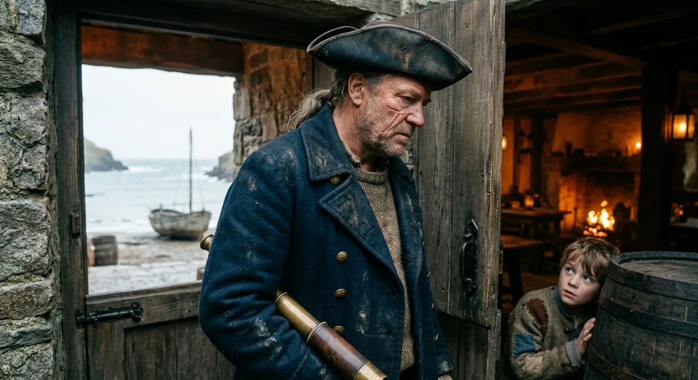
A Scarred Stranger Seeks Refuge
It is at the request of Squire Trelawney, Dr. Livesey, and other distinguished gentlemen that this account comes to be written—a full and honest reckoning of the affair of Treasure Island, holding back nothing save the precise bearings of that place, for there remains gold yet unhauled from its hiding. And so the pen takes up where memory begins: at the Admiral Benbow inn, kept by my father in those days, when a weather-beaten stranger first darkened our door and changed the course of all our lives.
He arrived like something blown in from darker waters—a tall, heavy, nut-brown man with a tarry pigtail swinging over a soiled blue coat, his hands rough and scarred, his nails black and broken. Across one cheek ran a sabre cut, pale and livid against his sun-darkened skin. I can still see him surveying our lonely cove, whistling to himself before breaking into that cursed sea-song that would come to haunt us all: *"Fifteen men on the dead man's chest—Yo-ho-ho, and a bottle of rum!"* His voice was cracked and tottering, as though worn down by years of bellowing orders against the wind.
He called himself Captain and would answer to nothing else, tossing gold coins upon the threshold as payment and demanding only rum, bacon, eggs, and a clear view of passing ships. Though his clothes were ragged and his speech coarse, there was something in his bearing that spoke of command—a man accustomed to obedience, or else to violence.
The captain proved a silent lodger, spending his days haunting the cliffs with a brass telescope and his evenings drinking rum by the fire. He wanted no company, yet each day he asked whether any seafaring men had passed along the road. We soon understood he feared rather than craved such encounters. He paid me a silver fourpenny each month to keep watch for one man in particular—a seafaring man with one leg. That phantom figure invaded my dreams most terribly, appearing in a thousand monstrous shapes, pursuing me over hedge and ditch until I woke in cold terror.
Yet for all my nightmares, I feared the captain less than others did. When the rum took hold of him, he became a tyrant of the parlour, forcing the trembling company to join his wicked songs or suffer his explosive rage. His tales of hangings, of walking the plank, of the Spanish Main and the Dry Tortugas, chilled the blood of our plain country folk. My father despaired that such a guest would ruin us, though in truth the captain drew a strange fascination—some of the younger men even admired him as a "true sea-dog."
Ruin came in another fashion, for the captain stayed month after month without paying another coin, and my poor father hadn't the courage to demand more. The stress of it, I believe, hastened his decline.
Only once did anyone stand against the old buccaneer. Dr. Livesey, visiting my ailing father, sat smoking in the parlour when the captain began his drunken singing and demanded silence. The doctor ignored him utterly. When the captain drew his clasp-knife and threatened murder, Livesey never flinched. Cool as winter stone, he promised that if the knife didn't disappear, the captain would hang at the next assizes. More than that—as both physician and magistrate, he would see the ruffian hunted down at the first breath of further trouble.
The captain folded like a sail robbed of wind, grumbling back to his seat, and held his peace for many evenings afterward.
But peace, as we would soon discover, was not destined to last at the Admiral Benbow—for the one-legged man of my nightmares was not the only ghost from the captain's past still walking the earth, and darker visitors were already making their way toward our door.
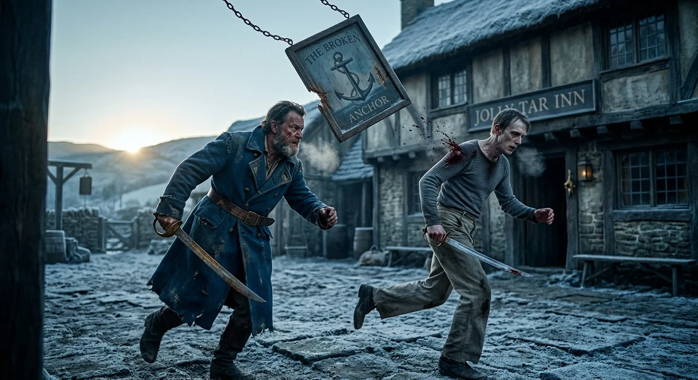
A Stranger's Sinister Ambush
The first of those mysterious events that would ultimately free us from the captain—though by no means from the shadow of his affairs—came upon us during that bitter winter when the frosts lay long and hard upon the land. My poor father was sinking daily, and it was plain to all that he would never see the spring. The burden of the inn fell entirely upon my mother and me, leaving us little time or inclination to attend to our sullen, unwanted guest.
I recall that January morning with perfect clarity—a pinching, frosty dawn when the cove lay grey beneath hoar-frost and the low sun touched only the hilltops, throwing its pale light far out to sea. The captain had risen earlier than his custom and set off down the beach, his cutlass swinging beneath that old blue coat, his brass telescope tucked under his arm. I watched his breath hang like smoke behind him as he strode away, and the last I heard was a great snort of indignation as he rounded the rock, his mind still churning, no doubt, over his quarrel with Dr. Livesey.
I was laying the breakfast table when a stranger stepped into the parlour—a pale, tallowy creature missing two fingers of his left hand. Though he wore a cutlass, he had not the look of a fighter about him, and yet something of the sea clung to him all the same. He ordered rum, but before I could fetch it, he called me close with an unsettling leer and began asking after his "mate Bill." When I described the captain—the cut on his cheek, his particular manner—the stranger's face twisted into an expression most unpleasant. "This'll be as good as drink to my mate Bill," said he, and I knew then that whatever reunion lay ahead would bring no joy.
The stranger kept me close, watching the road like a cat awaiting its mouse, his manner shifting between false friendliness and barely concealed menace. When at last the captain strode in, slamming the door and crossing straight to his breakfast without a glance aside, the stranger spoke his name.
"Bill."
The captain spun round, and all the colour drained from his weathered face. He looked upon that pale visitor as a man might look upon a ghost—or something worse.
"Black Dog!" he gasped.
They sat down together at the breakfast table, Black Dog positioning himself near the door with one eye on the captain and one on his retreat. I was sent away but strained to listen from the bar. For a time I heard only low murmuring, but soon their voices rose in anger. "No, no, no, and an end of it!" the captain bellowed. Then came a tremendous crash—chairs and table overturning, the clash of steel, a cry of pain—and Black Dog burst through the door with the captain in furious pursuit, both with cutlasses drawn and blood streaming from the stranger's shoulder. The captain's final blow missed its mark, burying itself instead in our signboard, where you may see the notch to this day.
Black Dog fled over the hill with astonishing speed despite his wound, and the captain stood staring after him like a man bewildered. Then he turned back inside, called for rum, and collapsed upon the parlour floor.
My mother and I were utterly at a loss when Dr. Livesey arrived to attend my father. The doctor quickly diagnosed what ailed the captain—not a wound, but a stroke, brought on by drink and rage, precisely as he had warned. He bled the man, revealing beneath the ripped sleeve a great tattooed arm bearing the words "Billy Bones his fancy" and, most ominously, a gallows with a man swinging from it.
"Prophetic," the doctor remarked dryly.
We managed to hoist the captain to his bed, where the doctor delivered his final warning: one more glass of rum, one more stroke, and death would surely follow. He ought to lie still for a week, the doctor told me privately—that would be best for him and for us.
But even as the captain lay senseless above, I could not shake the feeling that Black Dog's visit was merely the beginning of darker troubles yet to come.
The rest is waiting.
58 illustrated classics. Cinematic, anime, and kids editions. $4.99 a month — about the price of a coffee.
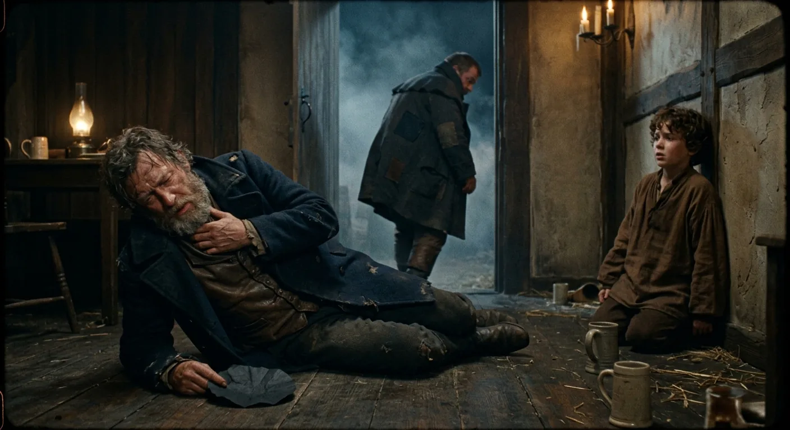
A Dying Man's Desperate Warning
Around midday, I brought cooling drinks and medicines to the captain's door, finding him weak yet agitated in his bed. He fixed me with desperate eyes and tried flattery first—reminding me of the silver fourpennies he'd given over the months—before begging outright for rum. When I mentioned the doctor's orders, he cursed with feeble fury, declaring all physicians to be swabs who knew nothing of seafaring life. He'd survived Yellow Jack in tropical ports, lived through earthquakes that made the very land heave like ocean swells, and rum had been his salvation through it all—meat and drink, man and wife to him.
His fingers trembled visibly, and he confessed to seeing old Flint's ghost lurking in the corner, warning me that without his dram he'd soon have the horrors and raise Cain itself. When he offered a golden guinea for a single noggin, I found myself offended by the bribe and told him plainly I wanted none of his money—only what he owed my father. I fetched him one glass, no more, and he drank it with desperate greed.
Yet even this small comfort couldn't quiet his fears. When I told him the doctor ordered a week's rest, he cried out in alarm—they'd have the black spot on him by then, those lubbers who wanted to nail what belonged to another. With tremendous effort he hauled himself upright, gripping my shoulder until I nearly cried out, his legs dragging like dead weight. The spirit of his words stood in pitiful contrast to the weakness of his voice. He managed only a sitting position before murmuring that the doctor had done for him and falling back into bed.
Then came his confession. Black Dog was bad, he told me, but worse men had put him on the hunt. If they tipped him the black spot, it was his old sea-chest they were after, and I was to ride for that doctor swab and have him pipe all hands—magistrates and such—to lay aboard all that remained of old Flint's crew. The captain had been Flint's first mate, the only soul alive who knew the place, given the secret at Savannah when Flint lay dying. He made me promise to keep watch for Black Dog or any seafaring man with one leg—him above all.
What might have come of these revelations I cannot say, for that very evening my poor father died quite suddenly, pushing all other matters aside. Grief and funeral arrangements consumed us entirely. The captain took his meals as usual, helping himself to more rum than prescribed, scowling and singing his dreadful sea-songs even in our house of mourning. He grew weaker daily, clambering about and holding to walls, seeming to forget his confidences altogether.
Then, the day after the funeral, as I stood at the door full of sad thoughts, a dreadful figure approached through the bitter fog—a blind man tapping a stick, hunched beneath a tattered sea-cloak. His gentle request for assistance turned instantly to iron threat when he seized my hand and demanded I lead him to the captain. His voice was cruel and cold as any I'd ever heard, and I obeyed in terror.
The captain sobered instantly at the sight of him. The blind man passed something into his palm—the black spot itself—then skipped away with uncanny nimbleness. The captain looked at his hand, cried "Ten o'clock! Six hours!"—and sprang to his feet. But even as he rose, he reeled, clutched his throat, and crashed face-first to the floor, struck dead by apoplexy.
Though I had never liked the man, I burst into tears—my second death in days, with the sorrow of the first still raw upon my heart, and darker troubles yet gathering on the horizon.
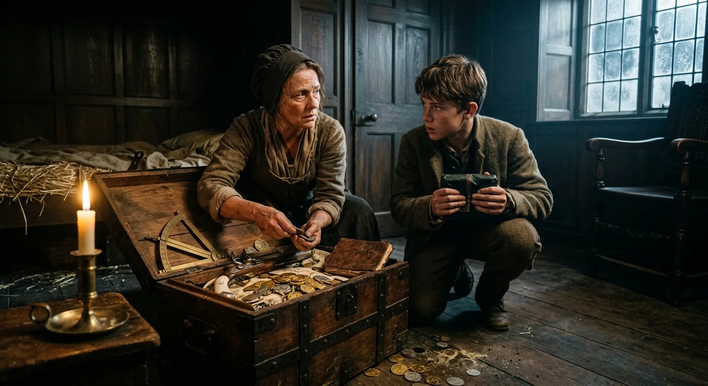
A Mother's Courage and the Dead Man's Key
No sooner had the breath left the captain's body than I told my mother everything—the whole terrible business I had kept too long to myself—and at once we found ourselves caught between necessity and danger. Some portion of the dead man's money was surely owed us for his lodging, yet we knew too well that his shipmates, particularly those two villains I had already encountered, would never part willingly with their comrade's effects. The captain's dying command to ride for Doctor Livesey would have meant abandoning my mother alone and undefended, which neither of us could countenance. Yet remaining in that house had become unbearable; every falling coal, every tick of the clock set our nerves jangling. The captain's corpse lay cold in the parlour while somewhere in the darkness that dreadful blind beggar waited, ready to return with his demands.
We resolved at last to flee together and seek assistance in the neighbouring hamlet. Out we ran, bare-headed into the gathering dusk and frosty fog, making for the cluster of cottages that lay beyond the next cove—mercifully in the opposite direction from whence Pew had come. The yellow glow of candles in windows cheered my heart wonderfully when we arrived, but that comfort proved hollow indeed. Not a soul among those villagers would venture back with us to the Admiral Benbow. The name of Captain Flint—though strange to my ears—carried such weight of terror that men, women, and children alike clung to their hearths and bolted doors. Some had seen strangers lurking on the roads; others had spotted a lugger hiding in Kitt's Hole. The short of it was this: they would gladly ride to summon Doctor Livesey, but defend our inn they would not.
Then my mother shamed them all with a speech I shall never forget. She would not, she declared, lose money rightfully belonging to her fatherless boy. If these hulking, chicken-hearted men refused to help, then she and I would return alone and have that chest open though we died for it. They gave me a loaded pistol and promised horses should we need to flee, but not one man rose to accompany us.
My heart pounded fiercely as we crept back through the cold night beneath a red moon rising through the fog. We slipped along hedgerows until the inn door closed behind us and I threw the bolt. There in the parlour lay the captain, eyes open, one arm flung out. On the floor beside his hand I found the black spot—that dreaded summons—bearing the message: *You have till ten tonight.* Our clock struck six. We had four hours.
The key hung round his neck on a tarry string, and with it we opened his sea-chest in the room where he had lodged so long. Beneath folded clothes lay a sailor's miscellany—a quadrant, pistols, bar silver, West Indian shells whose presence in such a hunted life I have often pondered since. At the very bottom we discovered what mattered: a canvas bag jingling with gold and a bundle of papers wrapped in oilcloth.
My mother, honest to the bone, began counting out precisely what was owed her—doubloons, louis d'ors, pieces of eight—when the tap-tapping of the blind man's stick froze my blood. It came to the door, rattled the bolt, then retreated. Still my mother refused to take more than her due, arguing even as a distant whistle signalled approaching danger. Only then did she snatch up what coins she had counted while I seized the oilskin packet, and we fled into moonlight now burning away the fog.
We had barely reached the little bridge when my mother's strength failed utterly. Somehow I dragged her beneath the stone arch, though it scarce allowed me to crawl, and there we lay—hidden, yet horribly exposed—as running footsteps and a bobbing lantern bore down upon the Admiral Benbow, bringing with them whatever fate awaited those who had dared open the dead captain's chest.
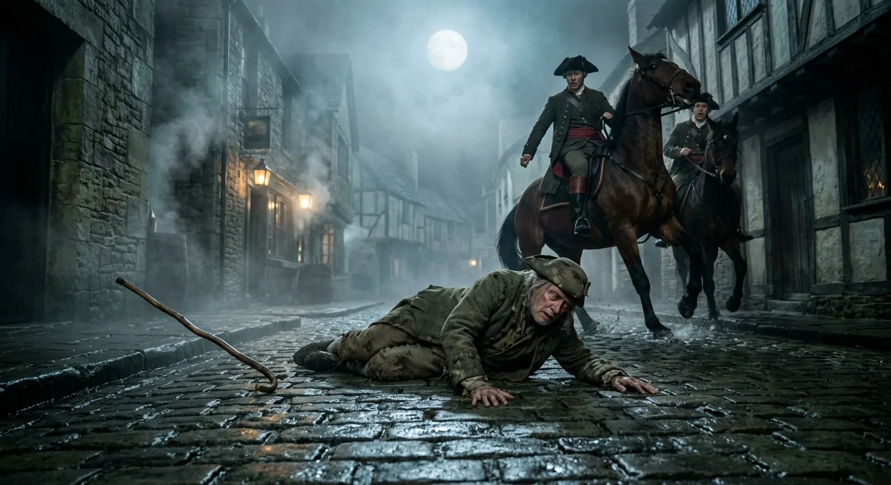
The Blind Beggar's Desperate Rage
Curiosity proved stronger than terror, and I crept back to my vantage point behind a bush of broom, from where I might observe the road before our door. Scarcely had I settled into position when my enemies came running hard—seven or eight of them—their feet beating out of time along the road, with the man bearing the lantern some paces ahead. Three of them ran hand in hand, and even through the mist I could make out that the middle man of this strange trio was the blind beggar himself. His voice confirmed what my eyes suspected.
"Down with the door!" he cried, and two or three answered him readily. A rush was made upon the Admiral Benbow, but I heard them pause at finding the door already open. Brief was their hesitation, for the blind man—Pew, as I soon learned his name—issued fresh commands, his voice pitched higher now, aflame with eagerness and rage. Four or five obeyed, plunging inside, while two remained on the road with their formidable leader.
Then came a cry from within: "Bill's dead."
But Pew would brook no delay. He ordered some to search the captain's body while others fetched the chest. I heard their feet rattling up our old stairs until the very house shook with their tramping. Then the captain's window flew open with a crash of broken glass, and a man leaned out to address Pew below.
"They've been before us. Someone's turned the chest out alow and aloft."
The money remained, but Pew cursed it—it was Flint's fist he wanted, that packet I now carried in my breast pocket. When they confirmed it was nowhere to be found, the blind man's fury turned murderous. "It's that boy," he raged. "I wish I had put his eyes out!" He ordered them to scatter and find us, to rout the house entire.
Yet even as they searched, a whistle sounded twice from the hillside—a warning signal. Pew's men grew fearful, speaking of departure, but their blind commander would hear none of it. His voice rose to a desperate pitch as he cursed them for cowards, reminding them that he alone had dared face Bill, blind though he was. Thousands lay within their grasp, yet they hung back like skulking dogs. But greed could not overcome their fear, and when Pew struck at them wildly with his stick, their loyalty shattered entirely.
The quarrel proved our salvation. While they raged amongst themselves, the sound of galloping horses rose from the hamlet, followed by a pistol shot from the hedgerow. At this final warning, the buccaneers fled in every direction—all save Pew. Whether from panic or vengeance for his blows, they abandoned their blind leader utterly. He remained alone upon the road, tapping frantically, groping and calling for his mates: "You won't leave old Pew!"
But leave him they had. When the riders crested the rise—revenue officers, as I soon discovered—Pew turned with a scream and dashed blindly toward them. The nearest rider tried desperately to save him, but it was no use. Down went Pew beneath the trampling hooves with a cry that rang through the night, then collapsed upon his face and moved no more.
Thus ended the blind beggar, stone dead upon the road. My mother recovered soon enough from her terror, requiring only cold water and salts, though she continued lamenting the balance of the captain's money. The supervisor rode on to Kitt's Hole, but the lugger had already slipped away under cover of darkness, and all Mr. Dance could do was dispatch word to warn the cutter—a gesture, as he admitted, about as good as nothing.
I returned with him to survey the Admiral Benbow, and never had I seen such destruction. Yet when Mr. Dance inquired what the villains had truly sought, I touched the packet resting against my heart and confessed I believed I carried it still. We agreed that Dr. Livesey, being both gentleman and magistrate, was the proper man to receive it. And so I was mounted behind Dogger, and our party struck out at a bouncing trot toward the doctor's house, carrying with us the mysterious object for which men had already died—and for which, I suspected, many more would risk their lives before our tale was done.
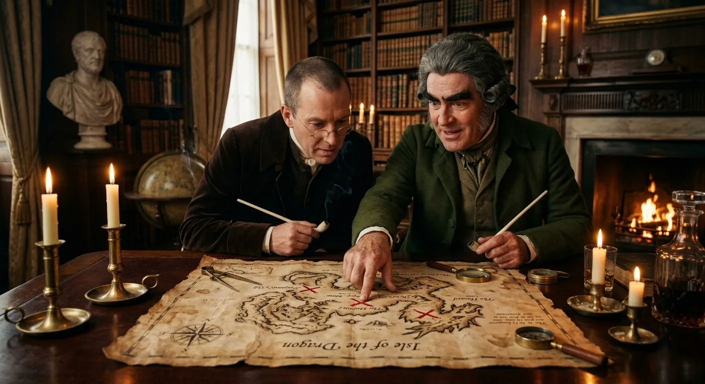
The Oilskin Packet Reveals Its Secrets
We rode hard through the night, the horses' hooves thundering beneath us until we drew up before Dr. Livesey's darkened house. Mr. Dance bade me knock, and when the maid appeared, she informed us the doctor had gone to dine with the squire at the hall. So onward we pressed, and I ran alongside Dogger's stirrup through the moonlit avenue, past great old gardens, until we reached the white line of the hall buildings gleaming in the darkness.
Inside, we were shown into a magnificent library lined with bookcases topped with solemn busts, where the squire and Dr. Livesey sat before a bright fire, pipes in hand. I had never seen Squire Trelawney so near at hand—a tall man, well over six feet and broad in proportion, with a bluff, weathered face reddened by long travels, and black eyebrows that moved readily, giving him a look of quick temper.
Mr. Dance stood straight as a soldier and told his tale like a lesson. How the two gentlemen leaned forward, forgetting their pipes in their surprise! When they heard how my mother had gone back to the inn for what was owed us, Dr. Livesey fairly slapped his thigh, and the squire cried "Bravo!" with such force that he broke his long pipe against the grate. By the story's end, Mr. Trelawney was striding about the room in agitation, and the doctor had removed his powdered wig entirely, sitting there strange indeed with his close-cropped black poll.
The squire praised Mr. Dance as a noble fellow and called me a trump, then sent for ale and cold pigeon pie, for which I was grateful, being hungry as a hawk after such adventures.
When at last they turned to the oilskin packet, the doctor's fingers fairly itched to open it. Inside they found two things: a book and a sealed paper. The book contained curious entries—dates and sums of money separated by crosses, spanning nearly twenty years. The squire, wise in such matters, declared it the old buccaneer's account-book, each cross marking a ship plundered or sunk, each sum representing Billy Bones's villainous share. "God help the poor souls that manned her—coral long ago," the squire muttered grimly.
But it was the sealed paper that set their hearts racing. The doctor opened it with great care, and there fell out the map of an island—nine miles long and five across, shaped like a fat dragon standing up, with two fine harbours and a central hill marked "The Spy-glass." Three crosses of red ink marked the island, and beside one were written words that made the gentlemen's eyes gleam: "Bulk of treasure here." On the back, precise directions told of tall trees, skeleton islands, bar silver in a north cache, and arms buried in a sand-hill—all signed with the initials J.F., which could only belong to the bloodthirstiest buccaneer who ever sailed: Captain Flint himself.
The squire's enthusiasm knew no bounds. He would give up everything, start for Bristol tomorrow, and in three weeks—two weeks—ten days!—have the finest ship and choicest crew in England. I was to be cabin-boy, Dr. Livesey the ship's doctor, and Trelawney himself would be admiral.
But the doctor's voice cut through the excitement with a sobering warning. There was one man he feared in this enterprise—the squire himself, who could not hold his tongue. Those desperate blades who had attacked the inn, and others surely lurking nearby, would stop at nothing to claim Flint's treasure. Until they reached the safety of the sea, none of them must breathe a word of what they had found.
The squire solemnly swore to be as silent as the grave, and with that oath hanging in the air, our adventure took its first steps toward the open sea and whatever dangers awaited us there.
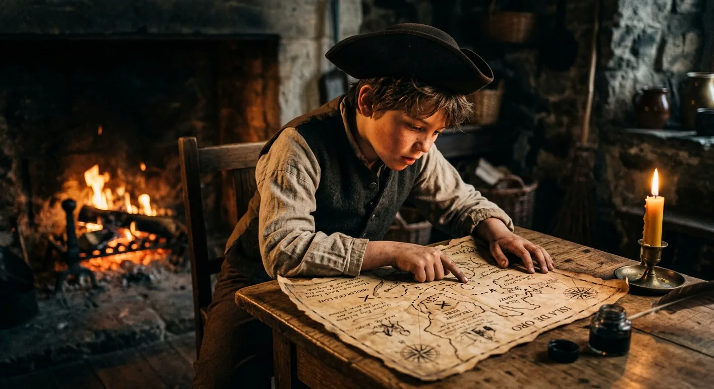
A Crew of Old Salts Assembled
The wait proved longer than anyone anticipated. Before the *Hispaniola* could put to sea, the best-laid plans of our little company scattered like leaves in an autumn gale. Dr. Livesey departed for London to arrange a physician for his practice, while the squire threw himself into preparations at Bristol with characteristic vigor. As for me, I remained behind at the hall under the watchful eye of old Redruth, the gamekeeper—practically a prisoner, though my cage was filled with the most glorious visions of what lay ahead.
Hour after hour I pored over the map, every inlet and contour burned into my memory. By the fire in the housekeeper's room, I sailed to that island a thousand different ways, explored every acre of its mysterious surface, and climbed countless times to that commanding height marked as the Spy-glass, imagining the views that would greet me from its summit. In my fancies, the isle teemed with savages one moment, with dangerous beasts the next—yet none of my imaginings proved half so strange or terrible as what we would actually find.
Then came the letter that changed everything. Addressed to Dr. Livesey but marked for Redruth or myself to open in his absence, it bore news from the squire at Bristol. The ship was bought and fitted—a sweet schooner of two hundred tons called the *Hispaniola*, ready for sea. But what caught my attention was the squire's troubling admission that all of Bristol seemed to know our destination. He had been talking, despite his promises of secrecy.
More remarkable still was his account of the ship's cook, a one-legged former sailor named Long John Silver who kept a public house and knew every seafaring man in port. The squire, moved by pity for a man who had lost his leg in His Majesty's service under the immortal Hawke, had engaged him on the spot. And through Silver's connections, the squire had assembled a crew of the toughest old salts imaginable—men of indomitable spirit, he declared, fit to fight a frigate.
The letter closed with urgent summons: I was to see my mother briefly, then make haste to Bristol with Redruth.
My excitement knew no bounds. The next morning found us on the road to the Admiral Benbow, where I discovered my mother well and the inn transformed by the squire's generosity—repainted, refurnished, with a beautiful armchair for her in the bar and an apprentice boy engaged to help in my absence. It was seeing that clumsy stranger standing in my place that first made me understand what I was leaving behind. For all my dreams of adventure, I had never truly considered the home I would be abandoning. My first tears came then, and I confess I made the poor boy's life miserable during my remaining hours, finding every opportunity to correct and belittle him.
The farewell came too quickly—to Mother, to the cove where I had spent my whole life, to the dear old Admiral Benbow, though somehow less dear now in its fresh paint. My last thought was of the captain who had haunted our doorstep, with his cocked hat and sabre-cut cheek. Then we rounded the corner, and home vanished from sight.
We caught the mail coach at dusk, and I slept like a log through the night's journey until a punch in the ribs startled me awake before a great building in a city street. Bristol at last. Our walk to the squire's lodgings took us along the quays, past ships of every size and nation—sailors singing at their work, men clinging to rigging high above like spiders on their webs. The smell of tar and salt filled my lungs with something new and wonderful. I saw figureheads that had crossed oceans, old sailors with earrings and tarry pigtails, swaggering along with their peculiar sea-walk. Had I seen kings themselves, I could not have been more enchanted.
Then there stood Squire Trelawney before his inn, dressed like a sea-officer in stout blue cloth, grinning broadly and imitating a sailor's gait.
"The doctor arrived last night," he announced. "The ship's company is complete!"
"When do we sail?" I cried.
"Tomorrow!"
And with that single word, the dreams of weeks became the reality of hours, and whatever dangers awaited aboard the *Hispaniola* drew one day closer.
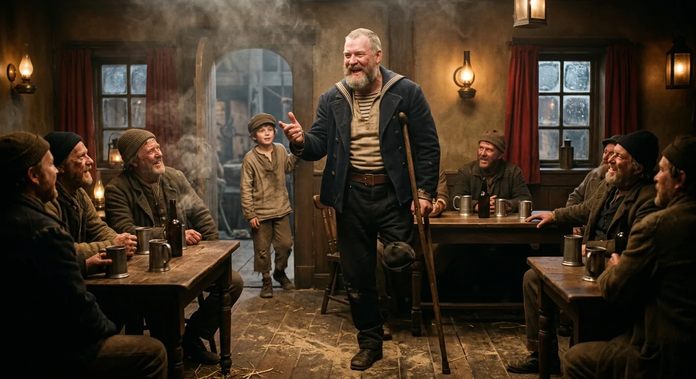
Black Dog Appears and Disappears
Following breakfast, young Jim Hawkins received from Squire Trelawney a note addressed to one John Silver, to be delivered at a tavern called the Spy-glass, marked by a great brass telescope hanging above its door. The boy set off through the bustling docks with keen pleasure, threading his way through the press of carts and cargo and weathered seamen until he found the place in question—a bright, tidy establishment with fresh paint on its sign and neat red curtains framing the windows, its floor clean-sanded and its low room hazy with tobacco smoke.
The customers within were rough seafaring men whose loud talk made Jim hesitate at the threshold. But his attention was soon captured by a figure emerging from a side room—a very tall, strong man with a face as broad and plain as a ham, pale but intelligent, wearing a cheerful smile. His left leg was cut off close by the hip, and he moved about on a crutch with such wonderful dexterity that he seemed to hop like a bird, whistling merrily as he went, offering friendly words and hearty slaps on the shoulder to his favored guests. This, Jim knew at once, must be Long John Silver.
Now the boy had harbored a private fear ever since the squire's letter first mentioned Long John—a dread that this one-legged sailor might prove to be the same sinister figure old Billy Bones had warned him to watch for at the Admiral Benbow. But one look at this clean, pleasant-tempered landlord was enough to quiet such suspicions. Long John seemed nothing like the buccaneers Jim had encountered before—not Captain Flint's former shipmates, not Black Dog, not blind Pew.
Emboldened, Jim crossed the threshold and presented himself with the squire's note. Silver received him warmly, his large firm hand enveloping the boy's own, declaring himself pleased to meet their new cabin-boy. Yet in that same moment, a customer at the far side of the room rose suddenly and bolted for the door. Jim recognized him at once—the tallow-faced man missing two fingers who had come to the Benbow seeking Billy Bones. It was Black Dog himself.
Jim cried out, but the villain escaped into the crowded street despite Silver's men giving chase. What followed was a masterful performance: Long John erupted in apparent outrage, demanding to know who this scoundrel was, berating old Morgan for having sat drinking with such a swab, and stumping about the tavern on his crutch in a display of righteous indignation that would have convinced any judge. When his men returned empty-handed, Silver lamented his own failure with such convincing distress—blaming his wooden leg for preventing him from catching the rogue himself—that Jim's briefly reawakened suspicions faded entirely. The cook even laughed heartily at having forgotten that Black Dog had fled without paying his score, and Jim found himself laughing along.
Silver insisted on accompanying the boy to report the affair to Captain Trelawney, and during their walk along the quays, he proved a most engaging companion, pointing out ships of every description, explaining their rigs and cargoes, and teaching Jim nautical phrases until the boy felt certain he had found one of the finest possible shipmates.
At the inn, Silver recounted the incident to the squire and Dr. Livesey with spirit and apparent honesty, calling upon Jim to confirm each detail. Though all regretted Black Dog's escape, the gentlemen could find no fault with the cook's conduct. After Silver departed with orders to have all hands aboard by four o'clock, the doctor admitted that while he generally placed little faith in the squire's judgments of character, this John Silver suited him well enough. The squire declared the man a perfect trump.
And with that settled, the doctor asked whether Jim might come aboard with them to see the ship—a question the squire answered with ready enthusiasm, bidding the boy fetch his hat so they might inspect the schooner together.
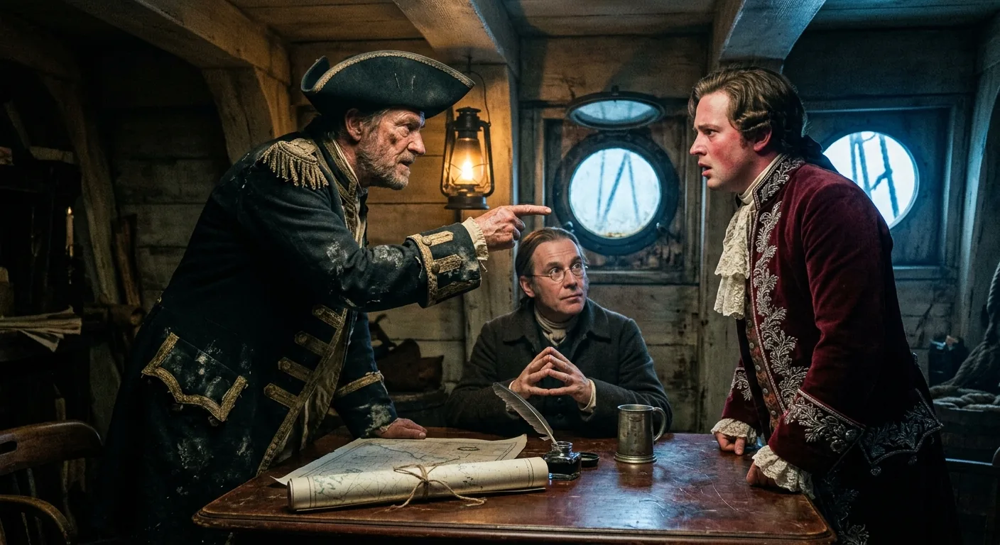
A Captain's Warning
We came alongside the *Hispaniola* at last, threading our way beneath the carved figureheads and round the sterns of a great many vessels at anchor, their cables scraping and swinging about us as we passed. The mate, Mr. Arrow, greeted us as we stepped aboard—a weathered, brown old sailor he was, with rings in his ears and a squint that gave him a roguish look. He and the squire fell to talking thick as thieves, but I saw quickly enough that between Mr. Trelawney and our captain, the air was considerably cooler.
Captain Smollett proved to be a sharp-looking man, carrying about him an air of displeasure with everything aboard his ship, and he wasted no time in telling us why. We had scarcely settled into the cabin when he came to speak his mind, and speak it plain he did. He did not like the cruise, he said. He did not like the men. He did not like his officer. Short and sweet, as he put it—and very nearly sweet enough to set the squire's blood boiling.
What followed was a conference of some heat and consequence. The captain laid out his grievances one by one: that the crew knew more of our purpose than he did himself, that word of treasure had spread from bow to stern, and that the very position of the island we sought had become common gossip among the hands. The squire denied having breathed a word, though I could see neither the captain nor the doctor put much stock in his protestations—nor did I, knowing Mr. Trelawney's loose tongue. Still, in this particular matter, I half believed him innocent.
The doctor, ever steady, drew from Captain Smollett what the man truly wanted. The powder and arms, currently stowed forward, should be moved aft, beneath the cabin and under our own watch. Our party—Hunter, Joyce, Redruth, and myself—should be berthed near the stern, forming a kind of garrison between ourselves and the crew. The map, he insisted, must remain secret even from him. When Dr. Livesey put it plainly—that the captain feared a mutiny—Smollett would neither confirm nor deny it outright. He was a man careful with his words, careful with his duty, and determined to see the voyage through whether we thought well of him or not.
The squire, predictably, was furious. He called the captain's conduct unmanly, unsailorly, and downright un-English. Yet Dr. Livesey seemed quietly satisfied, remarking that they had managed, against all odds, to get two honest men aboard—that man and John Silver both.
The new arrangement suited me well enough. The schooner was overhauled, berths made aft, and the cabin party settled snug and well-armed in the stern of the ship. Even Mr. Arrow seemed content. We fell to work shifting the powder when Long John Silver came aboard with the last of the men. He climbed the side nimble as a monkey and took one look at our labours. When told we were changing the powder, he warned we should miss the morning tide—but Captain Smollett cut him short with a word, and Silver touched his forelock and disappeared below without another murmur.
The captain ran a tight ship and made plain he would have no favourites aboard her—a fact I came to understand sharply when he barked at me to quit examining the swivel gun and get myself to the cook for proper work. I confess I hated him for it then, and stood quite firmly in the squire's opinion of the man.
Yet as the *Hispaniola* made ready to sail, I could not shake the captain's warning from my thoughts: life or death, and a close run.
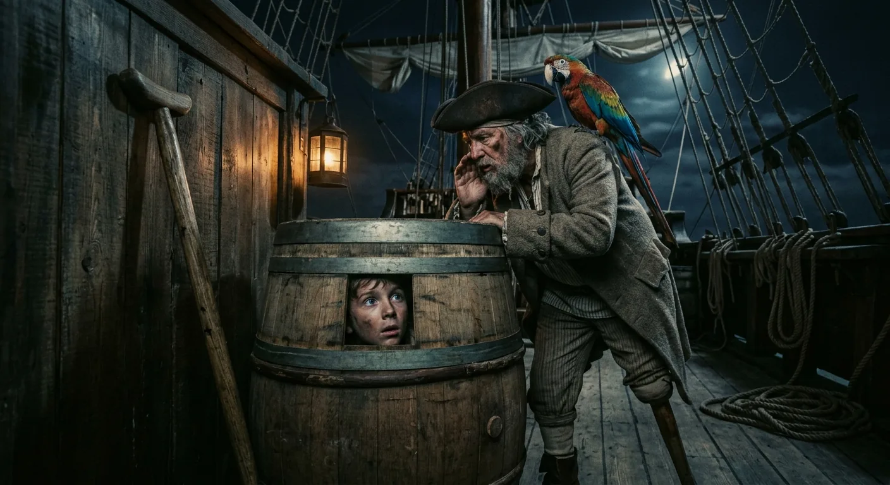
Setting Sail with Silver's Song
The night before departure brought a chaos young Hawkins had never known, not even in the busiest hours at the Admiral Benbow. Boats laden with the squire's well-wishers—Mr. Blandly among them—came and went through the dark hours, while the crew stowed cargo and readied the ship for sea. By the time the boatswain's pipe shrilled before dawn and men gathered at the capstan-bars, the boy was dog-tired yet utterly unable to tear himself from the deck. Everything enchanted him: the crisp commands, the whistle's shrill cry, the sailors moving like shadows in the lantern-light.
Then came a call for Long John Silver to sing them a stave—the old one—and that familiar voice rose up with crutch tucked beneath his arm: "Fifteen men on the dead man's chest—" The whole crew thundered the chorus, driving the capstan round with a will at every "Yo-ho-ho!" The song carried Hawkins back to the inn, to old Captain Flint's ruined voice croaking those same words. But nostalgia gave way to wonder as the anchor broke free, the sails caught wind, and the *Hispaniola* slipped past shore and shipping, bound at last for Treasure Island.
The voyage itself proved prosperous enough—a sound ship, capable hands, a captain who knew his business—yet before they raised their destination, certain matters demanded attention. First among them was Mr. Arrow, the mate, who proved even more worthless than Captain Smollett had feared. He commanded no respect, and before long he appeared on deck glassy-eyed and red-cheeked, tongue stumbling over words, plainly drunk. Where he procured the drink remained the ship's great mystery; no amount of watching revealed his source, and when confronted he only laughed or swore he touched nothing but water. One dark night, with a rough sea running, Arrow simply vanished—overboard, it was presumed. "That saves the trouble of putting him in irons," the captain remarked dryly, and none mourned him much. Job Anderson, the boatswain, stepped into the mate's duties, while the squire—himself an able seaman—took watches in fair weather. Israel Hands, the coxswain, proved wily and dependable at a pinch.
Hands was also Long John Silver's closest confidant, and through him one came naturally to consider the ship's cook himself. Aboard the *Hispaniola*, Silver moved with astonishing agility, his crutch slung by a lanyard so both hands stayed free. He wedged it against bulkheads, swung himself across pitching decks on rigged lines the men called "Long John's earrings," and kept his galley spotless, dishes gleaming, his parrot chattering in its cage. The crew respected him; he had a gift for ingratiating himself with every man, and to young Hawkins he showed particular kindness. "Come away, Hawkins," he would say, "come have a yarn with John." He spoke of his parrot—named Cap'n Flint after the infamous buccaneer—and spun wild tales of the bird's history: voyages with the pirate England, ports from Madagascar to Portobello, the fishing up of wrecked plate ships where she learned her endless cry of "Pieces of eight!" Silver's manner was so warm, so earnest, that Hawkins thought him the best of men.
Meanwhile, tension simmered between Squire Trelawney and Captain Smollett. The squire openly despised the captain; Smollett spoke only when addressed, sharp and spare. He admitted he might have misjudged some of the crew, and confessed a genuine fondness for the ship herself—yet still he distrusted the voyage. The squire could barely contain himself, pacing the deck with chin raised, muttering threats of explosion. The crew, for their part, wanted for nothing: double grog flowed freely, plum duff appeared on odd days, and a barrel of apples stood open in the waist for any man's taking. The captain warned the doctor that spoiling sailors bred devils, but good would come of that apple barrel all the same.
On the eve of sighting Treasure Island, Hawkins craved an apple and climbed into the nearly empty cask. Lulled by rocking waves, he had almost drifted to sleep when a heavy man sat down hard against the barrel—and began to speak. It was Silver's voice, and within a dozen words the boy understood a dreadful truth: the lives of every honest soul aboard now rested entirely upon what he had just overheard.
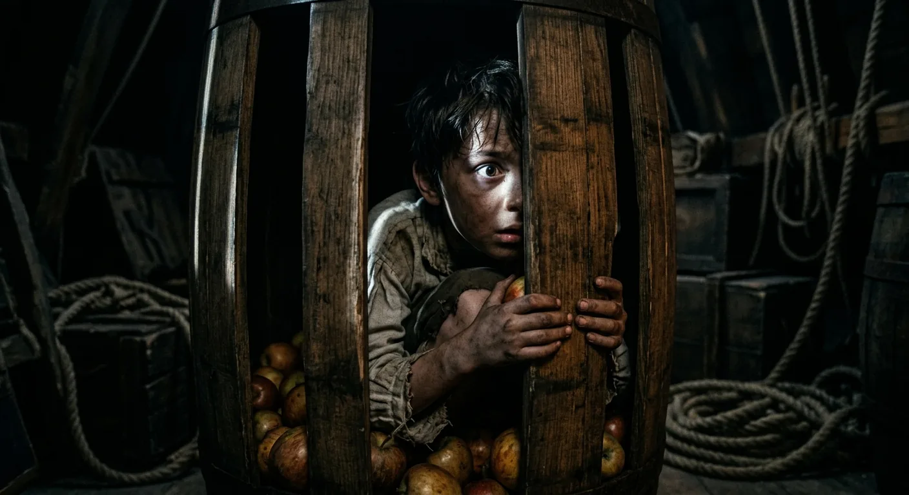
Silver's Dark Confession in the Hold
Hidden in the darkness of the apple-barrel, young Jim Hawkins became unwilling witness to treachery most foul—a discovery that would shatter every illusion of safety aboard the *Hispaniola* and reveal the true nature of the man they called Long John Silver.
The cook's voice carried through the staves with easy confidence as he held court with the youngest hand aboard, spinning tales of his piratical past with the same smooth charm he had used on Jim himself. Silver had served as quartermaster under the infamous Captain Flint—the very same broadside that took his leg had claimed old Pew's sight. He spoke of surgeons hanged at Corso Castle, of ships running red with blood and heavy with gold, of fortunes made and squandered by lesser men who lacked his cunning.
Jim's blood ran cold as he recognized the flattery Silver lavished upon the young sailor—the same honeyed words, the same calculating warmth the cook had shown him. Had Jim possessed the strength, he might have struck the villain dead through the barrel's wooden walls. But he could only listen, frozen with horror, as Silver wove his web.
The old pirate painted himself as the wisest of his breed. While Pew had burned through twelve hundred pounds and died starving in the gutter, while Flint had perished of rum in Savannah, Silver had banked his earnings—nine hundred from England's crew, two thousand more from Flint's. His wife had already sold the Spy-glass tavern and fled Bristol with everything. Unlike those reckless fools who drank away their plunder, Silver had lived soft and slept easy, all while planning for the day he might retire a gentleman.
But there was iron beneath the velvet tongue. When Israel Hands, the coxswain, joined their conference, impatient to seize control of the ship, Silver's command revealed itself sharp as cutlass steel. They would wait, he insisted. Captain Smollett would sail them safely, the squire and doctor would find the treasure and load it aboard—and only then would they strike. Navigation was no task for forecastle hands, and Silver had witnessed too many pirates swing at Execution Dock for their impatience.
The conversation turned darker still. What of the honest men when the time came? Dick asked the question with terrible innocence, and Silver praised him for his business-like thinking. Marooning had been England's way; butchery was Flint's style. Silver gave his vote coolly—death, the lot of them, when the moment proved right. He would suffer no sea-lawyers living to haunt him once he sat in Parliament riding in his coach. And Trelawney—that pompous squire—Silver claimed for himself, swearing to wring the man's head from his body with his own hands.
Jim's terror turned to paralysis when Silver called for an apple to wet his pipe. Only chance—and Israel Hands' thirst for rum—kept Dick from discovering the boy crouched among the fruit. During Dick's brief absence fetching the liquor, Jim caught precious fragments of whispered conversation: *Not another man of them'll jine.* So there remained faithful hands aboard yet. The knowledge kindled a desperate spark of hope.
The pirates raised their pannikin in turn—to luck, to old Flint, to themselves and plenty of prizes. Jim crouched in darkness, his mind racing with all he had learned and all that must be done.
Then moonlight spilled through the barrel's seams, silvering the world above, and a voice rang out from the masthead with words that would set everything in motion: *Land ho!*
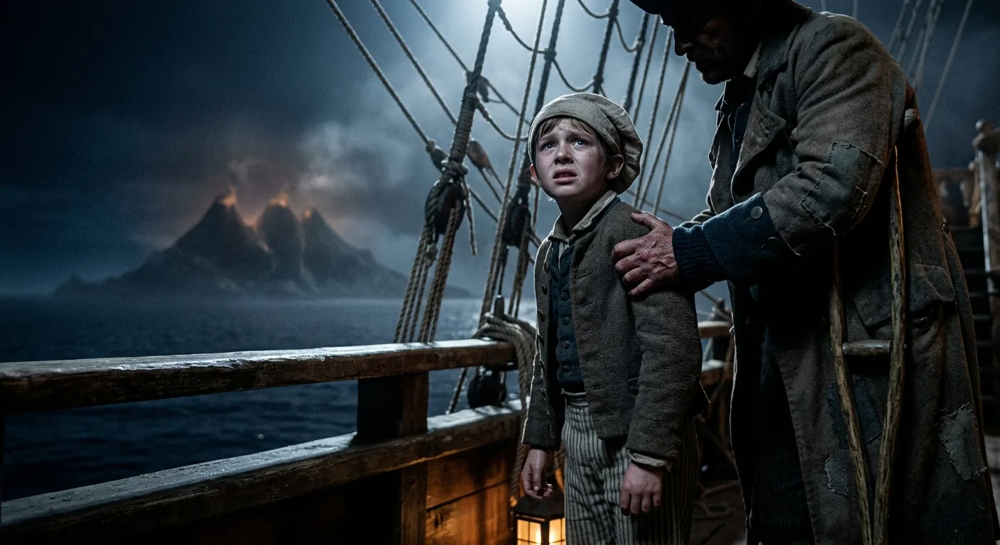
Land Ho, Secrets Below
A great commotion swept across the deck as feet thundered overhead and below, men tumbling from cabin and forecastle alike in their haste. I slipped from my hiding place within that fateful apple barrel and made my way with all the cunning I could muster—doubling behind the fore-sail toward the stern before emerging onto the open deck, where I joined Hunter and Dr. Livesey in their rush toward the weather bow.
There we found all hands already gathered, their eyes fixed upon a sight that seemed to shimmer before us like something from a fever dream. The fog had lifted almost in concert with the rising moon, revealing away to the south-west two low hills standing perhaps a couple of miles apart, with a third and higher peak rising behind, its summit still wrapped in mist. All three appeared sharp and conical against the night sky. I beheld this vision as one still half-asleep, for the horrid terror of what I had overheard from my barrel mere minutes before had not yet released its grip upon my heart.
Captain Smollett's voice rang out with orders, and the *Hispaniola* was brought a couple of points nearer the wind, set upon a course that would clear the island to the east. Then Silver spoke up, claiming knowledge of these waters from his days as a cook aboard a trader—naming the hills as sailors and pirates had named them: Foremast Hill, the Spy-glass, Skeleton Island. His voice carried the easy authority of experience, and when the captain produced a chart, Long John's eyes burned with barely concealed eagerness. But this was no pirate map marked with red crosses—merely an accurate copy, and I watched Silver master his disappointment with terrible composure.
The sea-cook's performance chilled me to the bone. Here was a man who could speak of these murderous waters with the innocence of a common sailor, then turn to me with that horrible friendliness, clapping my shoulder and speaking of swimming and climbing trees as though he were some kindly uncle rather than the architect of bloody mutiny. I could scarce suppress a shudder at his touch.
But I knew my duty. When Dr. Livesey called me near on some small pretense, I seized my moment and begged him in urgent whispers to gather the captain and squire below, for I carried terrible news. The doctor showed admirable restraint, masking our exchange with casual pleasantries before rejoining his companions. Soon enough, Captain Smollett addressed all hands with talk of drinking healths and serving grog—a clever ruse that sent the crew into hearty cheers while the gentlemen retired to the cabin.
There, in that warm night with moonlight streaming through the stern window and the doctor smoking so furiously his wig lay discarded in his lap, I told my tale complete. They heard me out in grave silence, and when I finished, they poured me wine and raised their glasses to my courage. The squire owned himself an ass for doubting the captain's earlier warnings, and Smollett himself confessed bewilderment that such a treacherous crew had shown no earlier signs—a testament, the doctor observed, to Silver's remarkable talents for deception.
What followed was a council of grim arithmetic. We could not turn back lest the mutineers rise at once, yet neither could we strike until we knew which men remained faithful. Seven souls we might count upon against nineteen villains, and of those seven, one was merely a boy. We must watch and wait, the captain declared, keeping a bright lookout until the moment came to seize the advantage. And so the fate of our small company was settled—though none could say what desperate measures that shore ahead might demand of us.
A Grim Arrival at Treasure Island
The morning I came on deck to see Treasure Island for the first time, the world had changed utterly from the night before. Though the breeze had abandoned us completely, we had made considerable progress through the darkness and now lay becalmed perhaps half a mile from the island's low eastern shore. I beheld a landscape that seemed to belong to some melancholy dream rather than to any treasure-seeker's fancy—grey woods stretching across the surface like a pall, broken only by streaks of yellow sand in the lowlands and the occasional pine rising above its fellows. The hills thrust up beyond the treeline in naked spires of rock, strangely shaped every one, and the Spy-glass—tallest of them all by several hundred feet—rose sheer on nearly every side before cutting off flat at its summit, as though waiting for some giant's statue that would never come.
The *Hispaniola* rolled her scuppers under with each ocean swell, and I clung to the backstay while the world spun giddily about me. Though I could manage well enough when the ship had way on, this standing still and being tossed about like a bottle on the tide was another matter entirely—particularly on an empty stomach. Between the sickness and my first proper look at that grey, melancholy island with its wild stone peaks and the surf thundering against the steep beach, my heart sank clean into my boots. Despite the bright sun and the shore birds crying all around us, from that moment forward I hated the very thought of Treasure Island.
A dreary morning's work awaited us. With no wind to speak of, we manned the boats and warped the ship three or four miles round to the haven behind Skeleton Island. I volunteered for one of the boats, though I had no business there, and found the men grumbling fiercely in the sweltering heat. Anderson commanded our boat but did nothing to keep order—indeed, he complained louder than any. "Well," he muttered with an oath, "it's not forever." Until that day the crew had worked briskly and willingly, but the sight of the island had loosened the cords of discipline like a knife through rope.
Long John Silver stood by the steersman throughout, conning the ship through the passage with a familiarity that spoke of previous visits. We anchored at last in a land-locked haven buried among trees, the shores flat and the hilltops standing round like an amphitheatre. Not a breath of air stirred, and a peculiar stagnant smell of sodden leaves and rotting wood hung over everything. The doctor sniffed at it like a man testing a bad egg. "I don't know about treasure," said he, "but I'll stake my wig there's fever here."
The men's conduct grew truly threatening once aboard. They lay about the deck in growling clusters, receiving every order with black looks. Mutiny hung over us like a thunder-cloud, plain for all to see. And Silver—there was the worst sign of all—worked frantically from group to group, all smiles and willingness, singing songs to mask the discontent, his anxiety as visible as a beacon fire.
In the cabin we held council, and the captain proposed a desperate gambit: let the men go ashore for the afternoon. If all went, we would hold the ship; if none, we would hold the cabin; but if only some departed, Silver would surely bring them back as mild as lambs. And so it was announced, and the men cheered like fools who expected to stumble over treasure the moment their feet touched sand.
It was then that a mad notion seized me—the first of several that would do so much to preserve our lives. With six men remaining aboard, our cabin party could neither take the ship nor truly need my help. I slipped over the side into the nearest boat, and though Silver called after me sharply, the moment we touched shore I swung myself into the thicket and ran.
"Jim! Jim!" I heard him shouting behind me. But I paid no heed, plunging blindly forward until I could run no longer—and found myself utterly alone in the wild heart of Treasure Island.
What I discovered in that strange wilderness would shake everything I thought I knew about the men we hunted and the dangers that awaited us all.
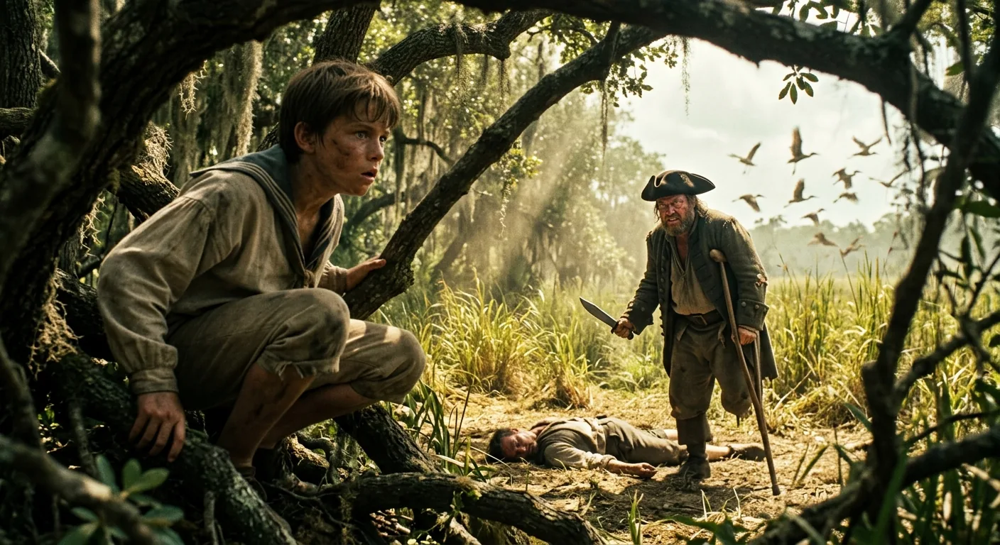
A Death Cry in the Marsh
Having slipped away from Long John Silver and the landing party, young Jim Hawkins found himself alone upon the island for the first time, and what had begun as an escape soon transformed into something far more exhilarating—the pure, unbridled joy of exploration. He crossed through marshland thick with willows and strange swampy growth, emerging at last onto an open stretch of sandy, undulating country dotted with pines and peculiar twisted trees that bore pale foliage like willows yet grew contorted as oaks. Before him rose one of the island's hills, its twin craggy peaks gleaming sharp against the sun, and Jim felt as though he had stepped into a world entirely his own—uninhabited, wild, populated by nothing more threatening than birds and beasts. He wandered among flowering plants unknown to him, observed snakes sunning themselves upon rocks, and even encountered a rattlesnake that hissed its deadly warning, though Jim, in his innocence, mistook the sound for something harmless.
His wandering carried him toward a long thicket of live-oaks that spread down from a sandy knoll to the edge of a broad, reedy fen, where the marsh steamed beneath the brutal sun and the distant outline of Spy-glass Hill trembled through the haze. Then came a sudden commotion among the bulrushes—wild ducks bursting skyward, followed by a screaming cloud of birds wheeling overhead. Jim knew at once that someone approached through the marsh, and when voices reached his ears, growing steadily louder, he dropped to the ground and crawled beneath the nearest tree, silent as prey.
The voices belonged to Silver and another man, and though Jim could not make out their words, the tone was unmistakably fierce. Sensing both danger and duty, Jim crept closer through the crouching trees, using the alarmed birds overhead to guide him, until at last he found himself peering down into a small green dell where Long John Silver stood face to face with Tom, one of the ship's honest hands.
Silver's great blond face shone with sweat as he pleaded with Tom to join the mutineers, speaking of the gold dust he thought of him, warning that all was already decided. But Tom—red-faced, voice shaking like a taut rope—refused absolutely, declaring he would sooner lose his hand than turn against his duty. Their exchange was cut short by a terrible sound echoing across the marsh: first a cry of anger, then another, and finally a long, horrid scream that rang off the rocks of Spy-glass Hill and sent every marsh-bird shrieking into the sky. Jim's blood ran cold as he understood—that was Alan, another honest sailor, murdered by the mutineers.
Tom leaped at the sound, but Silver stood utterly still, watching his companion like a snake coiled to strike. When Tom denounced Silver and turned his back to walk toward the beach, the old pirate moved with terrifying speed. He seized a tree branch, whipped his crutch from beneath his arm, and hurled it like a javelin, striking Tom squarely between the shoulders. Before the fallen man could recover—if indeed his back was not already broken—Silver was upon him, driving his knife twice into the defenseless body.
Jim nearly fainted. The world spun and swam before his eyes, bells ringing in his ears, until at last he came back to himself and saw Silver calmly cleaning his bloodied knife upon the grass, Tom's body motionless at his feet. When Silver produced a whistle and blew several sharp blasts across the heated air, Jim understood the signal would summon more pirates—and that he, having witnessed everything, would surely be next.
Terror seized him completely, and he fled through the trees as fast as his legs could carry him, running blindly toward the foot of the two-peaked hill, where the air grew fresher and the oaks stood tall as forest trees—until a fresh alarm stopped him cold, his heart pounding against his ribs.
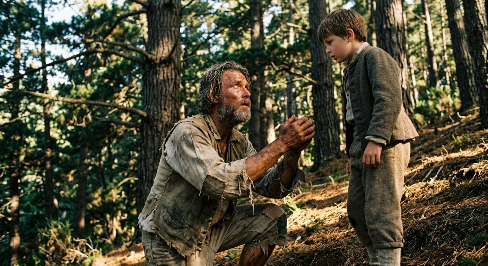
Ben Gunn's Lonely Island Refuge
A sudden cascade of gravel down the steep hillside seized my attention in an instant, and there—leaping behind a pine trunk with astonishing speed—was a figure of such dark and shaggy aspect that I could not determine whether I beheld bear, man, or some nameless creature of the woods. Terror rooted me to the spot, for I now found myself trapped between two perils: the murderers behind and this lurking apparition before.
In that moment of dread, my mind made its calculation, and strange as it may seem, Long John Silver himself appeared the lesser evil when measured against this wild unknown. I turned upon my heel and began retracing my steps toward the boats—yet the creature would not suffer my escape. It reappeared, circling wide to cut off my retreat, flitting from trunk to trunk with the swiftness of a deer, running upright yet stooping almost double in a manner unlike any man I had ever witnessed. A man, however, it surely was—and this recognition, though it summoned thoughts of cannibals, brought with it a measure of reassurance.
The memory of my pistol flashed upon me then, and with it came renewed courage. I set my face resolutely forward and walked briskly toward this man of the island. He must have marked the change in my bearing, for after much hesitation—advancing and retreating by turns—he threw himself upon his knees with clasped hands extended in supplication.
"Ben Gunn," came the answer to my inquiry, his voice hoarse and rusty from disuse. "I'm poor Ben Gunn, and I haven't spoke with a Christian these three years."
What a pitiful figure he presented—a white man like myself, his sun-blackened skin making his fair eyes startling in their contrast, his clothing nothing but tatters of old canvas held together by brass buttons, bits of stick, and loops of tarry gaskin. He had been marooned, he told me, left upon this desolate shore by his shipmates three years past, and had sustained himself on goats and berries and oysters ever since. Yet his heart ached most pitifully for Christian diet—for cheese, toasted mostly, which haunted his dreams through many a lonely night.
As we spoke, Ben Gunn revealed himself to be both touched by solitude and possessed of considerable cunning. He claimed to be rich—and though I suspected madness, he pressed the matter with such urgency that I attended closely. He had sailed with Flint when the treasure was buried, had witnessed that fearsome captain return alone in his boat while six strong seamen lay dead upon the shore. Later, marooned by another crew who grew weary of searching for the gold, Ben Gunn had spent three solitary years upon this island—and in that time, he hinted mysteriously, he had occupied himself with matters he wished communicated to our squire.
When I told him of Silver's presence aboard our vessel, his fear was palpable—yet learning I was no agent of Long John, Ben Gunn proved eager to ally himself with our cause in exchange for a thousand pounds and safe passage home. He spoke in riddles of his discoveries, urging me to tell the squire that "Gunn is a good man" who trusted gentlemen born above gentlemen of fortune.
Our conference ended abruptly when cannon-fire shattered the island's silence. Forgetting my terrors entirely, I ran toward the anchorage with Ben Gunn trotting easily at my side, his goatskins flapping as he chattered ceaselessly about goats and graveyards and prayers. A volley of small arms followed, and then—not a quarter mile before us—I beheld the Union Jack fluttering bravely above the trees, beckoning me onward toward whatever desperate stand my companions had made within the stockade.
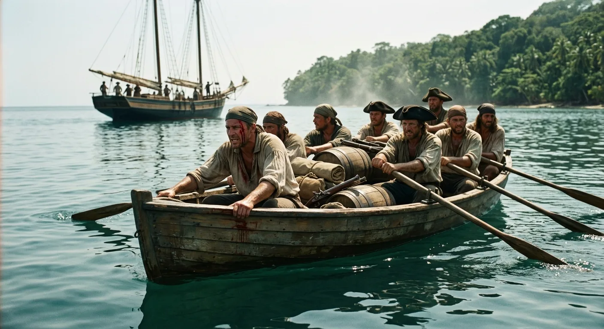
The Stockade and the Death Cry
At three bells in the afternoon watch, the two boats departed from the *Hispaniola* carrying the bulk of the crew toward shore, leaving Captain Smollett, the squire, and the doctor conferring in the cabin with precious few options before them. Had fortune granted them even a whisper of wind, they might have turned upon the six mutineers remaining aboard, cut the cable, and made their escape to open sea. But the air hung dead and stagnant, and before they could settle upon any course of action, Hunter descended with news that struck them harder than any gale—young Jim Hawkins had slipped into one of the boats and gone ashore among the pirates.
None among them doubted the boy's loyalty, yet fear for his safety gripped them all. They rushed to the deck, where the tropical heat had set the pitch bubbling in the seams and filled the air with such a foul stench that the doctor's medical instincts recognized it immediately as the breath of fever and dysentery waiting to claim them. The six remaining scoundrels sat grumbling beneath a sail in the forecastle while, on shore, the gigs lay beached with guards whistling "Lillibullero" in idle watch.
The doctor resolved to reconnoiter, and he and Hunter took the jolly-boat toward the stockade marked upon Silver's chart. The guards on shore stirred with uncertainty at their approach but, bound by their orders, remained at their posts and returned to their whistling. Rounding a bend that concealed them from view, the doctor landed and made haste inland, pistols primed and a silk handkerchief beneath his hat against the murderous heat.
Within a hundred yards, he discovered the stockade—a stout log-house built upon a knoll where fresh water sprang from the earth. The fortress stood enclosed by a paling six feet high, cleared ground all around it, and loopholes cut for musketry. Any force attempting to take it would find themselves exposed to withering fire while the defenders remained sheltered and supplied with water. The doctor recognized immediately what they had lacked aboard the *Hispaniola*: for all their arms, ammunition, and provisions, they had no fresh water.
His contemplation shattered when a death cry rang across the island. Though the doctor had witnessed violent ends enough in service to the Duke of Cumberland and carried a wound from Fontenoy, his pulse still faltered at the sound. His first terrible thought was that Jim Hawkins was dead.
But soldiering and doctoring both teach a man to act without hesitation. The doctor returned swiftly to the jolly-boat, and Hunter's strong rowing brought them alongside the schooner within moments. There he found the others shaken—the squire pale with guilt over the danger his expedition had wrought, and even one of the mutineers looking green about the gills, so rattled by the distant scream that Captain Smollett reckoned another gentle push might turn the man to their side.
The doctor laid out his plan, and they set to work with desperate efficiency. Old Redruth took position in the gallery with loaded muskets to guard against treachery from the forecastle hands, while Joyce and the doctor loaded the jolly-boat with powder, weapons, biscuits, pork, cognac, and the doctor's medicine chest. When the six mutineers attempted to flank them through the fore companion, they found Redruth waiting and retreated like whipped dogs. Captain Smollett's warning that any signal from them would be answered with pistol fire kept them cowering below.
Two trips they made to the stockade, provisioning the log-house while the watchers on shore grew increasingly agitated. A third and final loading brought the rest of the party, though first they cast the remaining arms and powder overboard where the bright steel glinted on the sandy bottom, denying their enemies any benefit from what they left behind.
Before departing, Captain Smollett made one last appeal—to Abraham Gray, calling upon whatever goodness remained in the man. After thirty tense seconds, a scuffle erupted below, and Gray burst onto deck with a knife wound bleeding down his cheek, rushing to join them like a faithful hound answering his master's whistle.
They shoved off with their unexpected addition, clear of the ship at last—though the safety of the stockade remained a dangerous stretch of water away.
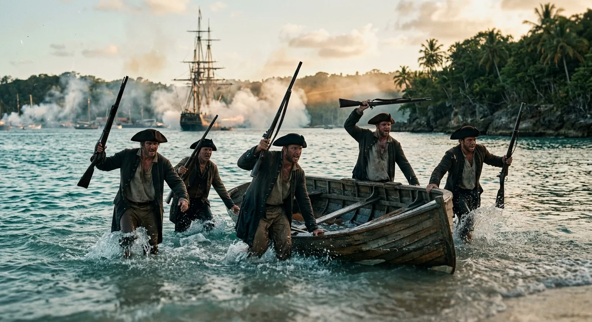
Desperate Crossing Under Enemy Fire
The crossing that would deliver us to shore proved altogether different from those that preceded it—different in its perils, its close calculations, and the manner by which fortune, having smiled upon us these several trips, at last showed her other face.
Our little gallipot of a boat rode dangerously low from the outset, groaning beneath the weight of five grown men, three of whom—Trelawney, Redruth, and the captain—stood well over six feet in their stockings. To this human cargo we had added powder, pork, and bread-bags until the gunwale lipped astern most alarmingly. We had not traveled a hundred yards before my breeches and coat-tails were soaked through from the water we shipped. The captain ordered us to trim the boat, and though we achieved a somewhat more even keel, none among us dared draw breath too deeply.
The ebb tide compounded our difficulties, running westward through the basin with a strong rippling current that threatened to sweep us past our proper landing-place behind the point. Should we surrender to its pull, we would come ashore beside the gigs, where the pirates might descend upon us at any moment. I confessed to the captain that I could not hold our heading for the stockade, though I was steering whilst he and Redruth manned the oars. He counseled patience—we must bear upstream, he explained, until the current slackened and we might dodge back along the shore. Gray, sitting in the fore-sheets and already accepted among us as a trusted man despite his recent defection from the mutineers, confirmed that the current was easing.
Then the captain's voice changed. "The gun!" said he.
I had considered bombardment of the fort, dismissing it as impractical. But when he bade me look astern, my blood ran cold. There upon the *Hispaniola*, five rogues busied themselves about the long nine, stripping away her tarpaulin cover. Worse still, we had left behind the round-shot and powder—a single axe-stroke would deliver it all into villainous hands. Gray reminded us, his voice hoarse with dread, that Israel Hands had served as Flint's gunner.
We turned our bow direct for the landing-place, though this meant presenting our broadside to the ship—a target broad as a barn door. I could see and hear that brandy-faced rascal Hands plumping down a round-shot upon the deck. The captain called upon Trelawney, our finest marksman, to pick off one of the men—Hands if possible. The squire raised his weapon cool as steel, and we all leaned to balance the craft as he fired. But luck deserted us: Hands stooped at the fatal instant, and it was another man who fell.
The wounded pirate's cry echoed from both ship and shore, where more of the rogues emerged from the trees, tumbling into their boats. The captain ordered us to give way without regard for swamping—if we could not reach land, all was lost. The gig pursued, though the ebb tide that had delayed us now hindered our attackers in turn.
We were close in, thirty or forty strokes from beaching, when the squire called out "Ready!" and the captain bellowed "Hold!" He and Redruth heaved backward, sending our stern under just as the cannon roared. The ball passed overhead—or so I fancy—and perhaps its wind contributed to our disaster. The boat sank gently in three feet of water, the captain and I standing face to face while the other three emerged drenched and bubbling from their headers.
No lives were lost, thank Providence, and we could wade to safety. But our stores lay at the bottom, and of five guns, only two remained serviceable—mine snatched overhead by instinct, the captain's carried wisely over his shoulder. Voices already approached through the woods, and we feared not only being cut off but whether Hunter and Joyce could hold firm against half a dozen. We waded ashore with all haste, abandoning the poor jolly-boat and fully half our powder and provisions.
Now began the desperate race to reach the stockade before the pirates closed their trap around us.
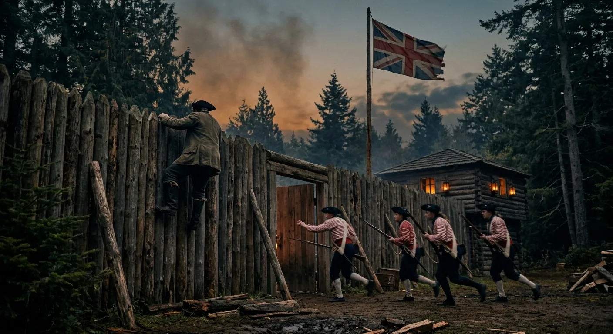
The Flag Rises, Redruth Falls
We pressed on through the wood with all haste, the stockade now within reach yet still separated from us by that narrow strip of trees. With every stride the buccaneers' voices grew louder at our backs—their footfalls crashing through brush, branches snapping as they forced their way through the thicket. It was plain enough we should have a proper fight of it before this business was done, and I checked my priming with that knowledge heavy upon me.
Seeing the situation clearly, I advised the captain to give his gun to Trelawney, whose own weapon had become useless. The squire, silent and steady as he had been throughout all the commotion, took the piece and paused just long enough to see it was ready for service. When I noticed Gray stood without a blade, I handed him my cutlass. It warmed our hearts to watch him spit in his palm, set his brows, and send that steel singing through the air. Every line of the man's body told us plain: here was a hand worth his salt.
Forty paces more and we broke from the trees to find the stockade before us, striking its southern side near the middle. At nearly the same instant, seven mutineers—Job Anderson the boatswain leading them—burst into view at the southwestern corner, running full tilt. They halted, caught off guard, and before they could recover themselves, the squire and I, along with Hunter and Joyce firing from the blockhouse, loosed a scattering volley. One pirate dropped dead; the rest fled into the woods without a second thought.
Our celebration proved brief. A pistol cracked from the bush, a ball whistled past my ear, and poor Tom Redruth fell his length upon the ground. We returned fire blindly, likely wasting powder, then turned our attention to Tom. One glance told me all was over for the old gamekeeper.
We carried him groaning into the log-house, where he lay dying without a word of complaint—the same dogged silence he had kept from the start of our troubles. He had followed every order faithfully, served like a Trojan behind his mattress, and now this sullen, serviceable old servant was to be the one to fall. The squire knelt beside him, kissing his hand and weeping like a child. Tom asked if he was going; I told him gently he was going home. He wished only that he might have had one shot at them first. When he asked for a prayer—"It's the custom, sir," he said apologetically—we obliged, and not long after, he passed away in silence.
The captain, meanwhile, produced stores from his swollen pockets: the British colours, a Bible, rope, ink, the log-book, and pounds of tobacco. With Hunter's help, he raised a fir-tree at the corner of the house and ran up the flag himself, an act that seemed to steady him considerably. He covered Tom's body with another flag and offered what comfort he could to the grieving squire.
When I informed him that rescue lay months away—not weeks—the captain's face grew grave. We had lost our second load of supplies; rations were dangerously short. His grim observation that we were perhaps better off without Tom's extra mouth spoke plainly of our desperate straits.
The enemy soon turned the ship's cannon upon us, round-shot roaring overhead. The captain refused to strike the colours—good seamanship and good policy both, showing the pirates we thought nothing of their fire. They blazed away all evening, but the high angle meant the balls buried harmlessly in sand.
Gray and Hunter ventured out to recover stores at low tide, only to find the mutineers already carrying off our provisions under Silver's command, every man armed with a musket. The captain recorded our dire circumstances in the log: six faithful souls remaining, stores for ten days at short rations, Thomas Redruth shot dead, and young Jim Hawkins—his fate unknown.
Then a hail sounded from the landward side, and I ran to the door just in time to see Jim Hawkins himself come climbing safe and sound over the stockade, bringing with him whatever strange tale had kept him from our company.
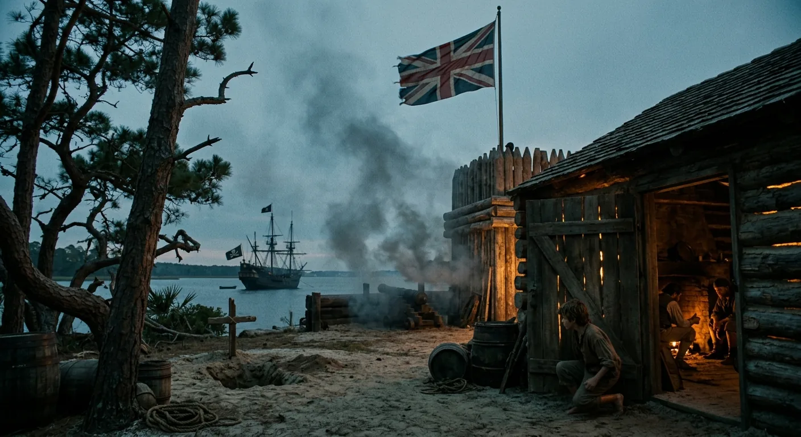
Ben Gunn's Warning and the Bombardment
Jim Hawkins resumes his tale from the moment Ben Gunn catches sight of the colours flying above the stockade, a sight that stops the castaway dead in his tracks. Where Jim suspects mutineers, Ben knows better—Silver and his ilk would fly the Jolly Roger without hesitation, not the Union Jack. The old flag means Jim's friends have won the day, taking shelter in the very stronghold Captain Flint built years ago. Yet Ben refuses to accompany the boy. He is too fly for that, he insists, and will not show himself until a born gentleman gives his word of honour. With anxious repetition, he makes Jim memorise his conditions: whoever comes must carry a white thing in his hand, must come alone, and must understand that Ben Gunn has reasons of his own. Jim barely finishes confirming the terms when a cannonball tears through the trees, scattering both of them into the undergrowth.
For the better part of an hour, the island shudders under bombardment. Jim darts from one hiding place to the next, each crash of shot driving him further east until the guns at last fall silent with the setting sun. The evening breeze rises, chilling him through his jacket as he creeps among the shore-side trees. Out in the anchorage, the Hispaniola rides at anchor beneath the black flag of piracy, her cannon smoke still drifting across the grey water. On the beach, mutineers hack apart the jolly-boat while others row back and forth to a great fire near the river mouth, their voices loud with rum-soaked revelry.
Before making for the stockade, Jim spies a solitary white rock rising from the low spit near Skeleton Island—the very landmark Ben Gunn described—and files it away should a boat ever be wanted. Then he slips through the woods and is warmly received by the faithful party within the palisade.
Inside the log-house, Jim finds rough comfort at best. The structure is fashioned from unsquared pine trunks, its floor raised above the sand, a ship's kettle sunk at the porch to catch the bubbling spring. The evening wind whistles through every chink, dusting everything with sand—their eyes, their teeth, their suppers. Smoke from the makeshift hearth fills the room, and against the wall, beneath the Union Jack, lies poor Tom Redruth, stiff and unburied. Gray, the sailor who broke from the mutineers, nurses a bandaged face.
Captain Smollett permits no idleness. He divides the company into watches, sets men to gather firewood and dig Redruth's grave, appoints the doctor as cook, and stations Jim at the door as sentry. Through it all, he moves among them, steadying their spirits. Dr. Livesey, stepping out now and again to rest his smoke-stung eyes, confides his admiration for the captain and inquires shrewdly after Ben Gunn. Learning of the castaway's craving for cheese, the doctor reveals that he carries a piece of Parmesan in his snuff-box—a gift, he declares, for Ben Gunn.
After burying Redruth at sunset and sharing a meal of pork and brandy grog, the three leaders confer. Their stores are desperately low, and their only hope lies in whittling down the buccaneers until they surrender or flee aboard the Hispaniola. Rum and marsh fever, they reckon, will do half the work for them. Exhausted, Jim finally sleeps like a log—only to be roused the next morning by a cry that brings him scrambling to the loophole: a flag of truce approaches, and at its head stands none other than Long John Silver himself.
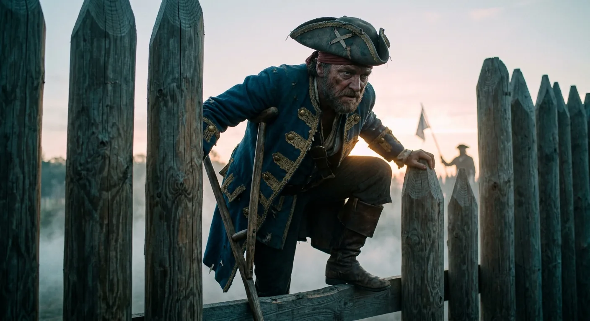
Silver's Parley at the Stockade
Dawn broke bitterly cold over the stockade, the kind of chill that seeps straight through to a man's bones and settles there. The sky gleamed bright and cloudless, painting the treetops with rosy light, yet where the two figures stood beyond the fence, shadow still clung to them, and a low white vapour crept about their knees—mist that had crawled up from the swamp during the night. The sight of it told plainly enough what manner of place this island was: damp, feverish, unwholesome.
One of the men waved a white cloth. The other stood placidly by, and there was no mistaking him—Long John Silver himself, come to parley.
Captain Smollett kept himself carefully in the porch, well out of the way of any treacherous shot, and set us all to our stations. I was given the eastern loophole to watch, though I'll confess I made a poor sentry of it, for my eyes kept drifting to the scene unfolding at the threshold. The captain hailed them sharply, demanding their business, and when Silver's companion announced that "Cap'n Silver" wished to come aboard and make terms, Smollett let out a dry laugh. Captain, was it? Here was promotion indeed.
Silver answered for himself, smooth as butter, explaining that the poor lads had chosen him captain after our "desertion," laying particular weight upon that word. He asked only safe passage in and out of the stockade—one minute's head start before any guns were fired. The captain's reply was cavalier, almost contemptuous: if Silver wished to talk, he could come, but any treachery would be on his own head.
That was enough for Long John. Despite his companion's attempts to hold him back, Silver laughed aloud, slapped the man on the shoulder, and made his laborious way over the stockade fence—crutch and all—with remarkable vigour. The climb up the sandy knoll cost him dear, what with the steep incline and the soft ground, but he stuck to it in silence like a man, arriving at last before the captain tricked out in his finest: a great blue coat thick with brass buttons and a laced hat set rakishly on his head.
The captain offered him no comfort—no seat indoors, no warmth by the fire. If Silver had chosen to remain an honest man, Smollett told him coldly, he might still be sitting snug in his galley. But he had made his choice: he was either the ship's cook, treated handsomely, or Captain Silver, mutineer and pirate, fit only to hang.
Silver took his seat upon the cold sand with good grace, remarking cheerfully upon the pretty place we'd made of the stockade, greeting Jim and the Doctor as though we were all a happy family gathered together. But when the captain pressed him to speak his piece, Silver's manner shifted. He acknowledged the raid we'd made upon them in the night—a good lay, he admitted, some of us handy with a handspike-end. His men had been shaken, perhaps himself as well. But it wouldn't work twice. They'd be ready now.
Then came his terms: give up the chart, and they'd offer us a choice—come aboard as prisoners to be set safely ashore once the treasure was shipped, or remain on the island with a fair division of stores and his word to send the first ship he sighted to rescue us. Handsome terms, he called them.
Captain Smollett rose, knocked out his pipe, and delivered his answer with ice in his voice. If the mutineers came up one by one, unarmed, he'd clap them in irons and see them fairly tried in England. Otherwise, they could all go to Davy Jones. They couldn't find the treasure, couldn't sail the ship, couldn't fight—and their vessel was as good as stranded. Every word fell like a hammer blow.
Silver's face contorted with fury. When he demanded help rising, not a man among us stirred. Growling oaths, he crawled to the porch, hauled himself up, and spat deliberately into our spring. Before an hour was out, he swore, he'd stave in our blockhouse like a rum barrel—and those who died would be the lucky ones.
He stumbled away through the sand, was helped over the stockade, and vanished among the trees, leaving us to prepare for the storm that was surely coming.
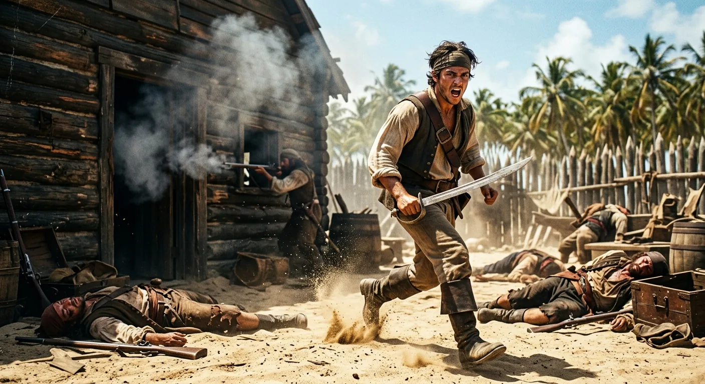
The Stockade Under Siege
The moment Silver vanished into the trees, Captain Smollett wheeled about to inspect his men—and found every post abandoned save one. Gray alone stood at his loophole, steady as a ship's timber. The captain's fury broke over us like a squall.
"Quarters!" he thundered, and we slunk back to our stations like whipped dogs, ears burning with shame. Gray earned his name in the log that day, while the rest of us—doctor, squire, and all—received a tongue-lashing that stung worse than salt in a wound. The captain reminded Dr. Livesey, with cutting precision, that if this was how he'd served at Fontenoy, he'd have been better off staying in his bunk.
But there was no time for wounded pride. The captain had deliberately baited Silver with his refusal, knowing full well that within the hour we'd be boarded. He laid out our situation plain: outnumbered, yes, but fighting from shelter, and with discipline—if we could muster it. The log-house bristled with preparation. Two loopholes on the east and west walls, two on the south by the porch, and five on the dangerous north side. A score of muskets stood ready, arranged on makeshift tables of stacked firewood, cutlasses ranged in the middle for close quarters. The fire was doused and carried out, lest smoke blind us when we needed our eyes most.
Positions were assigned with military economy. Dr. Livesey took the door, Hunter the east, Joyce the west. Squire Trelawney, the finest shot among us, joined Gray at the vulnerable north wall with its five loopholes. Young Hawkins and the captain would load and assist—neither being much account with a musket, as Smollett himself admitted without sentiment.
Then came the waiting. The sun climbed high and fierce, baking the sand, melting resin from the logs until the heat became a second enemy. An hour crawled past in agonizing silence. The captain compared it to the doldrums and asked Gray to whistle for wind.
The wind came—in the form of gunfire.
Joyce's shot shattered the stillness, and the woods erupted in answer. Bullets peppered the log-house from every quarter, yet none found their way inside. The smoke cleared to reveal nothing—no movement, no gleam of metal. The enemy had vanished like phantoms.
The captain took quick stock. Three shots from the south, seven or eight from the north—the attack would come from that quarter, the others mere distraction. Yet Smollett held his arrangement; any loophole left unguarded would become a death-trap if the mutineers crossed the stockade.
They came with a roar—a cloud of pirates bursting from the northern woods, swarming the fence like monkeys. The squire and Gray dropped three, but four made it through, scrambling up the mound toward the house. Job Anderson's massive head appeared at a loophole, bellowing for all hands. Hunter went down, stunned by his own musket turned against him. A cutlass-wielding pirate charged through the doorway at the doctor.
Everything reversed in a heartbeat. We who had fired from cover now lay exposed and desperate.
"Out, lads, out, and fight 'em in the open! Cutlasses!" the captain cried.
I seized a blade and plunged into the sunlight, barely feeling the cut across my knuckles. The doctor was already pursuing his man down the hill, slashing him across the face. I rounded the house and met Anderson himself, his hanger flashing overhead. I leaped aside, lost my footing in the sand, and tumbled down the slope.
When I regained my feet, it was over. Gray had cut down Anderson. Another pirate lay dying at a loophole, pistol still smoking. The doctor had finished his man. The sole survivor fled back over the stockade, leaving his cutlass behind.
Five enemies lay dead or dying. But victory had cost us dear. Hunter lay senseless; Joyce was shot through the head, gone forever. And in the center of the house, the squire knelt supporting Captain Smollett, both men pale as sea-foam.
The captain tallied the grim arithmetic: five of theirs against three of ours—four to nine now, better odds than we'd started with.
But as we caught our breath in that blood-stained shelter, none of us could know what desperate adventure awaited beyond those log walls.
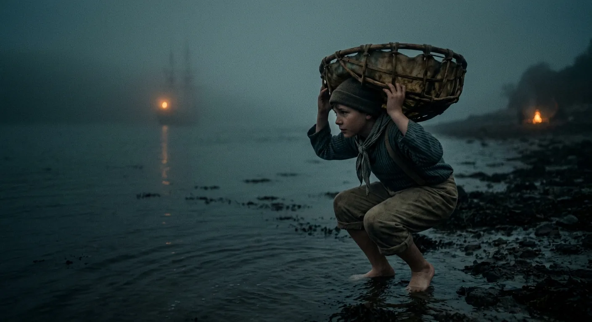
A Reckless Escape Into the Woods
The mutineers did not return that day, having received what the captain grimly called their rations, and we were left to tend to our wounded and prepare our dinner in a silence broken only by the dreadful groans of the dying. The squire and I cooked outside the stockade despite the danger, for the sounds within the block house were too terrible to bear—the doctor working over his patients while their cries rang out across the clearing.
Of the eight men who had fallen in battle, only three yet drew breath: one of the pirates shot through the loophole, poor Hunter, and Captain Smollett himself. The first two were beyond all hope. The mutineer perished under the doctor's knife, and Hunter, whose chest had been crushed and skull fractured in his fall, lingered through the day breathing loudly, much as the old buccaneer had done back at the Admiral Benbow. Sometime in the night, without word or sign, he slipped away to meet his Maker.
The captain's wounds, though grievous, would not prove fatal. Anderson's ball had broken his shoulder-blade and grazed the lung, while the second shot had torn the muscles of his calf. He would recover, the doctor assured us, though he must neither walk nor move his arm nor speak for weeks to come. As for my own cut knuckles, Doctor Livesey patched them with plaster and boxed my ears for good measure.
After dinner, a strange thing occurred. The doctor consulted with the squire and captain, then armed himself with pistols, cutlass, and musket, tucked the treasure map into his pocket, and strode off into the woods. Gray, sitting beside me, was so thunderstruck he forgot his pipe entirely. When he wondered aloud if the doctor had gone mad, I guessed the truth—he was going to find Ben Gunn.
But while I sat there in that stifling heat, the sand blazing beneath the midday sun, blood everywhere, and dead men all around, a dangerous thought began to take root in my mind. I envied the doctor his cool walk through the shaded pines while I grilled in my own sweat and resin. That envy grew as I scrubbed the block house and washed the dinner things, until at last, finding myself near the bread-bag and unobserved, I filled my pockets with biscuits. I was a fool, perhaps, but I meant to do this foolish thing with every precaution I could muster.
My scheme was to find the boat Ben Gunn had mentioned—hidden, I believed, near a white rock on the sandy spit dividing the anchorage from the open sea. It was worth doing, but since I would never be permitted to leave, I had to slip away when no one was watching. When the squire and Gray busied themselves with the captain's bandages, I bolted over the stockade and into the trees before my absence could be noticed. This was my second folly, leaving but two sound men to guard the house—yet like the first, it would prove a help toward saving us all.
I made for the eastern coast, threading through tall woods until I emerged where the sea lay blue and sunny to the horizon, the surf thundering against the shore as it always did on Treasure Island, day and night without ceasing. I walked with enjoyment until I had gone far enough south, then crept up the spit to survey the anchorage. There lay the *Hispaniola*, perfectly mirrored in the leaden water, the Jolly Roger hanging from her peak. I spotted Silver in the gig and the red-capped rogue I'd seen striding the palisade that morning. Captain Flint's unearthly screaming reached me across the mile of water.
As darkness fell and fog buried the heavens, I found the white rock and, in a hollow beneath it, Ben Gunn's boat—a crude coracle of goatskin stretched over lopsided wood, scarcely large enough for a boy. And there, with that tiny vessel at my feet, a new and more reckless notion seized me: I would slip out under cover of night, cut the *Hispaniola* adrift, and let her run aground where she pleased.
I ate my biscuits and waited for absolute blackness. When at last I shouldered the coracle and waded through the swampy sand to the retreating tide, only two points of light remained visible—the pirates' fire on shore and the dim glow from the ship's cabin reflecting on the fog—as I set my fragile craft upon the dark water and pushed off toward whatever fate awaited me.
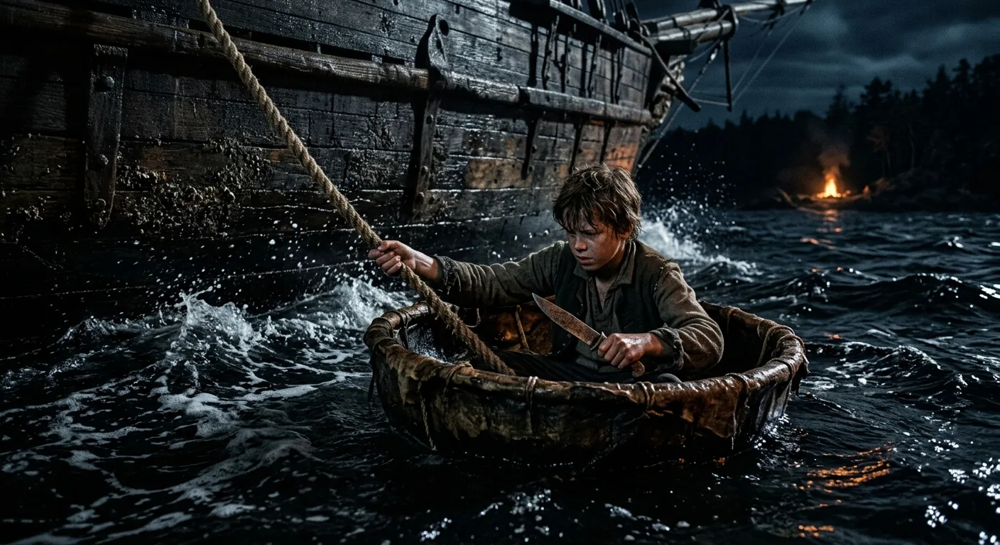
A Coracle's Wild Drift to the Ship
The coracle proved a treacherous ally in those dark waters. Though Ben Gunn had fashioned her well enough—buoyant and seaworthy for one of my slight frame—she possessed a stubborn, contrary nature that defied all my efforts at command. She would go any direction save the one I intended, spinning and drifting broadside to the current like a leaf caught in an eddy. Had it not been for the tide itself, sweeping me steadily toward my quarry, I should never have reached the *Hispaniola* at all.
But reach her I did. First she emerged from the blackness as little more than a darker shadow upon the night, then her spars and hull took shape before me, and in what seemed mere moments I found myself alongside her hawser, my fingers closing tight upon the rope. The cable stretched taut as a bowstring under the pull of the current, the water bubbling and chattering around the ship's hull like a mountain brook. One slash of my sea-gully, I knew, and the schooner would drift free upon the tide.
Yet even as I drew my knife, prudence stayed my hand. A hawser cut under such tension would snap back with terrible force—enough to knock both me and my little craft clean from the water. I waited, hardly daring to breathe, until fortune favored me once more. The wind, which had shifted round to the south-west after nightfall, sent a puff across the deck that pushed the *Hispaniola* up into the current and slackened the rope in my grasp. Seizing my chance, I sawed through strand after strand until only two remained, then lay quiet again, biding my time for another merciful gust.
All the while, angry voices had been drifting from the cabin—Israel Hands, that old gunner of Flint's, and the fellow in the red nightcap, both deep in their cups and growing fouler by the minute. Their oaths flew thick as hailstones, punctuated by the crash of bottles hurled through the stern window. On shore, the pirates' camp-fire glowed through the trees, and someone sang that droning sailor's dirge about the one man left alive from seventy-five. A doleful tune for men who had buried so many of their own that very morning, yet these buccaneers seemed as callous as the sea itself.
At last the breeze came again. The hawser slackened, and with one final effort I severed the last fibres. The *Hispaniola* began to spin upon her heel, drifting free, and I found myself swept hard against her bows. I worked frantically to push clear, terrified of being swamped, until my hands fell upon a trailing cord. Instinct made me grasp it; curiosity compelled me to pull myself near enough for one perilous glimpse through the cabin window.
What I saw there stopped my breath. Hands and his companion were locked in mortal struggle, each with fingers wrapped about the other's throat, their faces crimson with rage beneath the smoky lamp. I dropped back into my coracle as the ship and I glided past the camp-fire, where the pirates had broken into that familiar chorus—*Fifteen men on the dead man's chest*—and I thought grimly how busy drink and the devil were proving aboard the *Hispaniola* that very moment.
Then the current seized us both. The tide had turned at right angles, sweeping through the narrows toward the open sea with ever-quickening force. The schooner yawed violently; shouts and pounding feet told me the drunkards had finally awakened to their peril. But I could do nothing save lie flat in the bottom of my wretched skiff, commending my soul to its Maker, certain that raging breakers awaited us at the strait's end.
For hours I lay thus, tossed and spray-soaked, expecting death with every plunge—until exhaustion overcame terror, and sleep claimed me at last, carrying my thoughts home to the old Admiral Benbow.
When dawn came, I would discover just how far the current had carried me, and what strange fate awaited aboard that drifting ship.
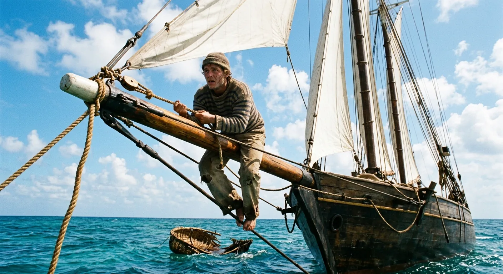
Adrift Among Waves and Sea Lions
Dawn found young Jim Hawkins adrift in his tiny craft, tossing upon the swells at the south-west end of Treasure Island, with the great bulk of the Spy-glass hill rising between him and the morning sun. The rugged coastline of Haulbowline Head and Mizzenmast Hill loomed close at hand, and his first instinct was to make for shore at once. But that notion died swiftly—the breakers crashed and bellowed among the fallen rocks with such violence, sending spray flying high into the air, that he knew any attempt to land there would see him dashed to pieces upon the beetling crags. And as if the treacherous surf were not discouragement enough, the rocks themselves crawled with great slimy creatures—sea lions, though Jim knew them not—barking and tumbling into the water with tremendous splashes, their monstrous forms enough to disgust him thoroughly of that landing-place. He would sooner starve at sea than face such terrors.
Yet fortune offered him a better prospect. To the north lay the Cape of the Woods, its tall green pines descending pleasantly to the water's edge, and Jim remembered what Silver had spoken of—the current that sets northward along the island's western coast. Already under its influence, he resolved to conserve his strength and let the sea carry him toward that kindlier shore.
The swell ran smooth and great beneath him, the wind steady from the south, and Jim marvelled at how his light coracle rode the billows—bouncing and dancing like a bird, rising over blue summits that would have swamped a lesser vessel. Emboldened, he sat up to try his hand at paddling, but the little boat would not suffer interference. At his slightest movement she plunged headlong down a slope of water, burying her nose in spray and drenching him thoroughly. Terrified, he threw himself flat again, and the coracle settled back into her easy rhythm.
Keeping his head despite his fear, Jim baled out the seawater with his cap and set himself to studying the waves. He discovered they were not the smooth mountains they appeared from shore, but rather ranges of hills with peaks and valleys through which his craft threaded her own wise course. Understanding now that he must not disturb her balance, he found he could yet slip his paddle over the side in the smoother stretches, giving gentle shoves toward land. It was tiring, tedious work, but he gained ground steadily, drawing near the Cape of the Woods until he could see the green tree-tops swaying in the breeze.
By now thirst tortured him cruelly—the blazing sun, the salt spray caking his lips, the tantalizing nearness of those trees. But as the current swept him past the cape and the next reach of sea opened before him, all thoughts of water fled his mind. There, not half a mile distant, sailed the *Dolorosa*—her white canvas gleaming like snow in the sunlight.
Jim watched the schooner's strange behaviour with growing wonder. She sailed erratically, swooping this way and that, falling constantly into the wind's eye with her sails shivering helplessly. "Clumsy fellows," he muttered, thinking how Captain Smollett would have had them skipping. Then the truth dawned upon him—nobody was steering at all. The men must be dead drunk below, or else they had deserted her entirely. And if that were so, might he not board her and return the vessel to her rightful captain?
The current bore coracle and schooner southward together, and Jim, inspired now by adventure and the thought of the water breaker aboard, sat up boldly and paddled after his quarry. He shipped heavy seas and his heart fluttered with fear, but gradually he mastered the way of it and drew steadily closer. At last his chance came—the wind fell, the schooner revolved slowly on the current, and then filled suddenly on the port tack, bearing down upon him like a stooping swallow. In that desperate instant, with the bowsprit sweeping over his head, Jim leaped—catching the jib-boom with one hand, his foot finding purchase between stay and brace—and heard behind him the dull blow of the *Dolorosa* crushing his little coracle beneath her keel.
He clung there panting, without retreat, alone upon the decks of the *Dolorosa*—and whatever fate awaited him aboard.
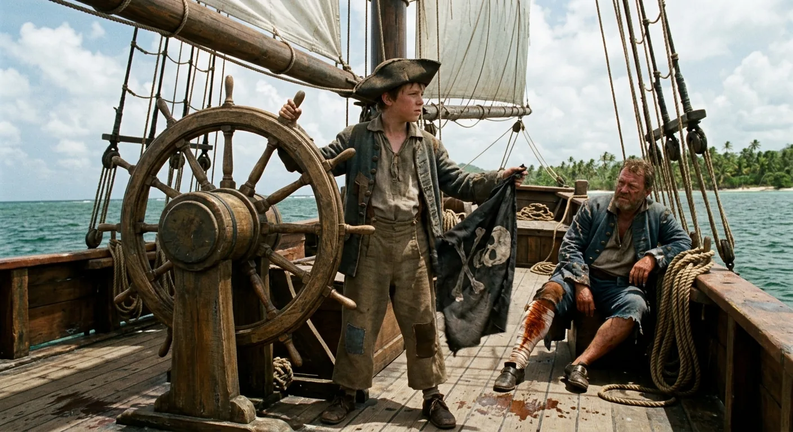
Blood and Brandy on the Hispaniola
The instant I gained my footing on the bowsprit, the flying jib cracked and filled with a sound like cannon-fire, and the *Hispaniola* shuddered stem to stern beneath me. I near tumbled headlong into the sea, but managed to crawl back along that narrow spar and drop myself onto the deck, breathless and trembling.
What greeted me there was a scene of abandonment and ruin. Not a living soul stirred. The planks, unwashed since the mutiny began, showed the muddy prints of countless boots, and a broken bottle rolled in the scuppers like some restless creature. Then the ship swung hard into the wind—the jibs thundered, the rudder slammed, and the great main-boom came sweeping inboard to reveal what lay hidden on the after-deck.
There were the two watchmen. Red-cap lay flat on his back, stiff as timber, arms flung wide in the manner of a crucifix, his dead grin fixed and horrible. Israel Hands sat propped against the bulwarks, chin sunk upon his chest, his weathered face gone white as tallow beneath its tan. Dark splashes of blood stained the planks around them both. It was plain enough what had happened—these two ruffians had murdered each other in some drunken quarrel.
Yet Hands, I soon discovered, was not quite dead. He stirred with a low moan, and though the sound touched something in my heart, I remembered well what I had overheard in the apple barrel, and all pity left me.
I walked aft with newfound boldness. "Come aboard, Mr. Hands," I called out, my voice touched with irony I scarcely knew I possessed.
He could barely roll his eyes toward me. "Brandy," was all he managed to croak.
Below, the cabin was a wreck of broken locks and muddy bootprints, empty bottles rolling in corners, the doctor's medical books torn apart for pipelights. I found what brandy remained and gathered provisions for myself—biscuit, pickled fruits, raisins, and cheese. Only after I had drunk deep from the water-breaker did I give Hands his brandy, which he swallowed like a man dying of thirst.
When he had recovered enough to speak, I delivered my declaration: I had come aboard to take possession of the ship, and he would regard me as captain until further notice. Then I hauled down that cursed black flag and cast it into the sea, crying out, "God save the king! And there's an end to Captain Silver!"
Hands watched me with crafty, calculating eyes, but he was too weak and too desperate to refuse my terms. He proposed a bargain—I would give him food, drink, and bandages for his wounded thigh, and he would teach me to sail the schooner. I agreed readily enough, though I made one thing clear: we would not return to Captain Kidd's anchorage. I meant to beach her in North Inlet, where my friends might find her.
Within minutes we had the *Hispaniola* running before the wind, skimming along the island's coast like a bird in flight. I bound his wound with a silk handkerchief that had belonged to my mother, and soon enough Hands began to revive, sitting straighter and speaking clearer.
I confess I felt a swelling pride in my new command—the bright weather, the changing views of shore and headland, the conquest I had made single-handed. My conscience, which had troubled me sorely for deserting my companions, now lay quiet. I should have been entirely content, were it not for the coxswain's eyes following my every movement about the deck, and that strange smile playing always upon his haggard face—a smile that spoke of pain and weakness, yes, but also of cunning, of derision, and of something darker still: the unmistakable shadow of treachery.
Whatever bargain we had struck, I knew I could not trust Israel Hands—and as the northern point of the island drew near, I felt certain that before this voyage ended, one of us would have to reckon with the other.
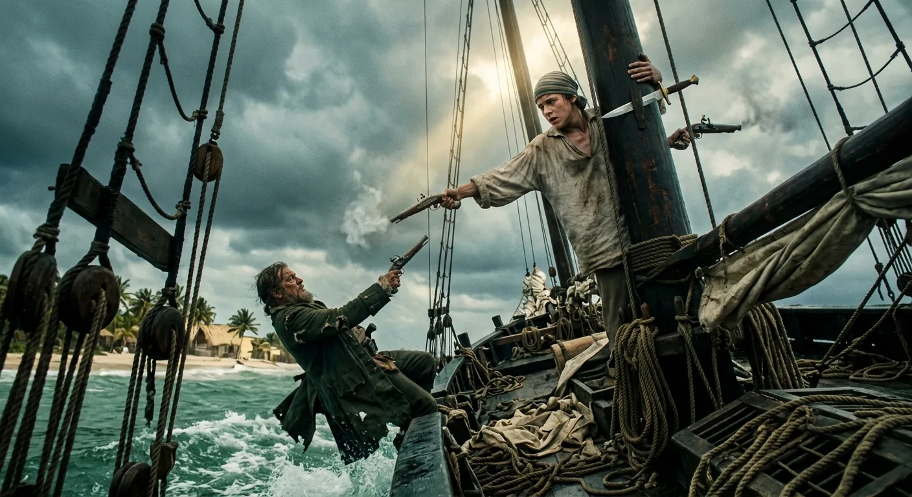
A Deadly Game of Wits
The wind had shifted westward, a welcome change that would ease their passage from the island's northeast corner to the mouth of the North Inlet. Yet with no power to anchor and no safe way to beach the *Hispaniola* until the tide rose higher, Jim Hawkins found himself trapped in uncomfortable idleness with the wounded coxswain, Israel Hands—sharing another meal in silence beside the body of the dead pirate O'Brien, whose presence grew more unsettling by the hour.
It was Hands who broke the quiet, that unsettling smile playing about his lips as he suggested Jim heave the corpse overboard. When the boy refused, claiming weakness and distaste for the work, Hands turned philosophical—rambling about the unlucky nature of the ship, the many poor seamen who had met their end aboard her, and whether dead men might somehow return to trouble the living. Jim answered plainly enough: the body could be killed, but not the spirit, and O'Brien might well be watching them even now. This gave Hands only momentary pause before he dismissed such concerns and asked Jim to fetch him wine from the cabin, claiming the brandy was too strong for his head.
But Jim was no fool. The coxswain's hesitation rang false, and his preference for wine over brandy seemed utterly unconvincing. The whole request was plainly a pretext to get the boy below deck. Hands's wandering eyes, his guilty manner, the way he kept glancing at the dead man and the sky—all betrayed some hidden purpose. Yet Jim concealed his suspicions, playing the willing servant. He descended the companion with deliberate noise, then slipped off his shoes and crept forward through the ship, popping his head up where Hands would never expect to see him.
There was the coxswain, crawling across the deck despite his wounded leg, stifling groans of pain. Jim watched as Hands retrieved a blood-darkened dirk from a coil of rope, tested its edge, and concealed it in his jacket before dragging himself back to his former position. The boy had seen enough—Hands could move, was now armed, and clearly intended murder.
Still, Jim reasoned that their interests aligned for the moment: both needed the schooner safely beached before anything else. Until that work was done, his life would be spared. He returned to the cabin, fetched a bottle of wine, and reappeared on deck as though nothing had changed. Hands took the bottle and drank to luck, then begged Jim to cut him a quid of tobacco, claiming he had no knife—a lie that twisted in the boy's stomach. When Jim urged the man to pray like a Christian, given his bloody deeds and broken trust, Hands offered only his grim philosophy: thirty years at sea had taught him that goodness brought no reward, that striking first was all that mattered, and dead men told no tales.
The navigation that followed demanded all their attention. The northern anchorage was narrow and treacherous, requiring careful handling, and Hands proved an excellent pilot despite his wounds. They slipped past the heads into the inlet, where a rotting three-masted wreck lay festooned with seaweed and shore bushes—a melancholy sight, but proof the waters were calm. Hands directed them toward a flat sandy beach, perfect for grounding the ship.
In the excitement of running the *Hispaniola* ashore, Jim forgot his danger. Only instinct—perhaps a creak, perhaps a shadow—made him turn at the last moment. There was Hands, dirk in hand, lunging toward him. Their cries mingled—Jim's sharp with terror, the coxswain's bellowing with fury—as the boy leapt aside. The tiller swung hard and struck Hands across the chest, buying Jim precious seconds to escape the corner where he had been trapped.
What followed was a deadly game of chase across the canted deck, Jim's useless pistol misfiring with waterlogged priming, the wounded pirate pursuing with murderous speed. When the *Hispaniola* struck ground and heeled over sharply, both were thrown into the scuppers with the tumbling corpse of O'Brien. Jim recovered first, scrambling up the mizzen shrouds until he reached the cross-trees, the dirk striking just below his feet. There, with trembling hands, he reprimed his pistols while Hands laboriously climbed after him, blade clenched between his teeth.
With both weapons ready, Jim called down his warning, throwing the coxswain's own words back at him: dead men don't bite. Hands paused, spoke of surrender, of signing articles—but even as the words left his mouth, his hand flashed back, and the dirk sang through the air. Jim felt the blow, the sharp pain as the blade pinned his shoulder to the mast. In that terrible instant, both pistols fired—not by conscious aim—and Israel Hands, with a choked cry, fell headlong into the water below.
Now, with blood running from his wound and his enemy vanquished, Jim faced a new struggle: freeing himself from the mast and finding a way back to his companions with the ship secured at last.
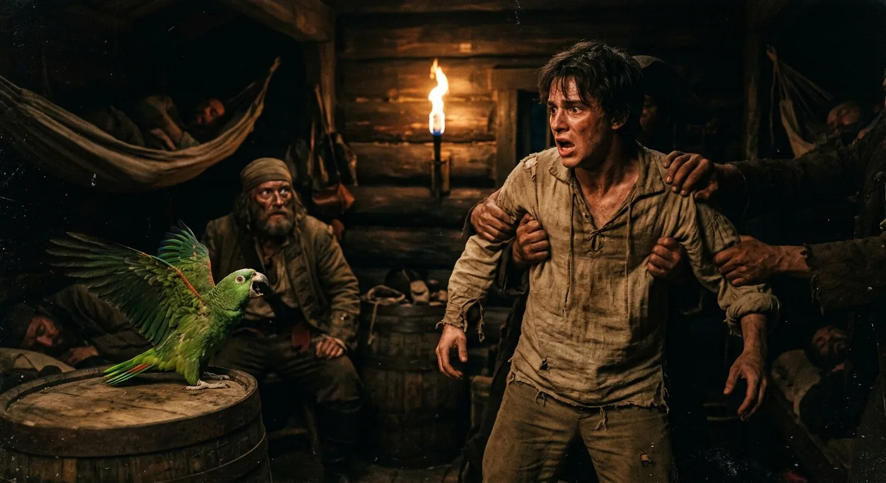
Jim's Victory at Sea
From my precarious perch on the cross-trees, the vessel listing so drastically that I hung suspended over nothing but the bay itself, I watched Israel Hands meet his end below. He surfaced once in a froth of foam and blood, then sank to rest upon the clean bright sand in the shadow of the *Hispaniola's* hull. Fish darted past his body, and the trembling water made him appear to stir, as though making one final attempt to rise—but he was dead enough, shot and drowned both, food for fishes in the very spot where he had meant to murder me.
The certainty of his death brought no relief. Instead, sickness and terror swept through me like a cold tide. Hot blood ran down my back where the dirk had pinned my shoulder to the mast, burning like a brand, yet it was not the wound that troubled me most. What set my heart racing was the horror of falling from that height into the still green water to lie beside the coxswain's corpse. I clung until my nails ached, eyes shut against the peril, until gradually my senses returned and I became master of myself once more.
The dirk, mercifully, had barely caught me—a mere pinch of skin held it fast. When I shuddered violently, the blade tore free. I broke through my coat and shirt where they remained tacked to the mast and descended by the starboard shrouds, for nothing could have compelled me to venture upon those overhanging port lines from which Israel had fallen.
Below, I tended my wound as best I could—painful and bloody, but neither deep nor dangerous. Then I turned my attention to the ship's last unwelcome passenger: O'Brien, sprawled against the bulwarks like some horrible puppet. The habit of tragic adventures had worn away my terror of the dead. I took him by the waist as though he were a sack of bran and tumbled him overboard with one good heave. His red cap floated on the surface while he sank to rest beside Israel, that bald head across the knees of the man who had killed him, quick fishes steering to and fro over both.
Alone now upon the schooner, I worked to secure her against the turning tide. I doused the jibs and cut the main-sail halyards, letting what canvas I could manage fall. As shadow crept across the anchorage and evening chill set in, the *Hispaniola* settled on her beam-ends in the shallowing water. I dropped overboard into waist-deep water and waded ashore, leaving her tilted with her main-sail trailing upon the bay. The sun went down and the breeze whistled low among the tossing pines.
At last I was off the sea, and not empty-handed. The schooner lay clear of buccaneers, ready for our men to board. In famous spirits, I set my face homeward toward the stockade, eager to boast of my achievements. I crossed the watercourse near where I had encountered Ben Gunn and walked more circumspectly as dusk deepened to darkness.
When moonlight finally rose to guide me, I pressed on eagerly—yet slowed as I threaded the grove before the stockade, mindful that it would be a poor end to my adventures to be shot by my own party. The block house lay in shadow, but an immense fire had burned to red embers nearby. This troubled me; we had been niggardly of firewood by the captain's orders.
I crossed the palisade in darkness and crawled toward the house. The sound of my companions snoring together fell upon my ears like music—all seemed well. Emboldened, I walked steadily through the door into the blackness within, meaning to lie down in my own place and enjoy their faces come morning.
My foot struck a sleeper's leg. And then, shattering the silence, a shrill voice broke forth: "Pieces of eight! Pieces of eight!"—Silver's green parrot, Captain Flint, keeping better watch than any human being.
The sleepers sprang up. Silver's voice rang out: "Who goes?" I turned to run but struck against one man, then another who closed his arms around me tight.
"Bring a torch, Dick," said Silver.
A brand flared to life, and I found myself a prisoner among the very pirates I had fought so hard to escape.
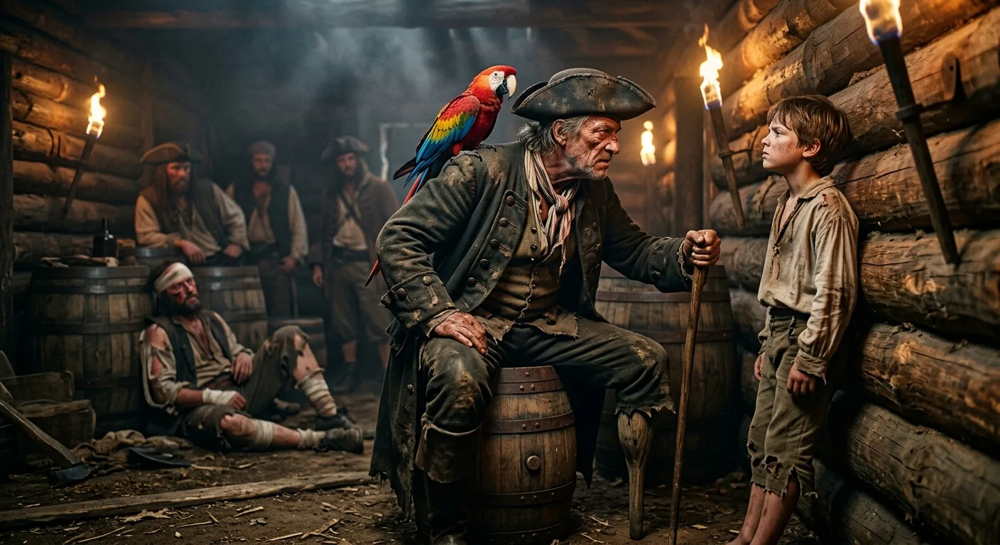
Pirates' Bargain and Silver's Offer
The torchlight painted everything in shades of blood and shadow as Jim Hawkins stood facing his worst fears made manifest. The pirates had taken the blockhouse—every barrel of pork, every loaf of bread, the cognac cask that now served as Long John Silver's throne. But what struck the boy's heart cold was the absence of any prisoner, any sign of his companions. In that terrible moment, Jim could only believe them all dead, and the guilt of not having perished alongside them bit deep into his conscience.
Six buccaneers remained—all that survived of that murderous crew. Five stood swaying on their feet, faces flushed and bloated from drink, dragged unwillingly from their stupor. The sixth lay propped on his elbow, deathly pale beneath a blood-soaked bandage, surely the same wretch who had fled wounded into the woods during the great assault. And there sat Silver himself, the parrot preening upon his shoulder, his fine broadcloth suit now torn and clay-daubed from the forest's cruelties. Something harder had crept into that weathered face, something colder than Jim remembered.
Silver greeted him with dangerous friendliness, speaking of pleasant surprises while filling his pipe, all the while watching Jim with those calculating eyes. The boy stood with his back pressed to the wall, wearing courage like a mask while despair coiled black within his chest. Silver spoke honeyed words of admiration, of seeing himself in the lad, of inevitable choices. He claimed the cabin party had abandoned Jim—called him an ungrateful scamp—and that his only hope lay in joining Captain Silver's company.
Yet beneath the velvet threat, Jim caught hold of something precious: his friends lived still. The relief nearly overwhelmed the fear.
When pressed to choose, Jim demanded truth first—and truth he received. Silver told of Doctor Livesey arriving under flag of truce, of the *Hispaniola* vanished from the bay, of bargains struck that surrendered the blockhouse and all its stores. The cabin party had marched away to parts unknown, and Jim had been deliberately left out of the treaty.
Then something fierce awakened in the boy. If death awaited him regardless, he would meet it standing tall. The words poured out of him like a breaking dam—how he had hidden in the apple barrel and heard their conspiracy, how he had cut the ship's cable, killed the men aboard, and hidden the schooner where they would never find her. The whole ruin of their enterprise lay at his feet, and he claimed it proudly. He offered himself as witness who might save them from the gallows, or as another corpse to add to their mounting failures.
The pirates sat stunned as sheep before the wolf. When Morgan leaped up with his knife, Silver's voice cracked like cannon fire. He reminded them all whose will commanded here, whose hand had sent countless men to feed the fishes over thirty bloody years. Not one dared challenge him.
But the crew's discontent could not be wholly crushed. They invoked their rights, demanded a council outside the blockhouse walls. One by one they filed out with mocking salutes, leaving Silver and Jim alone in the flickering torchlight.
Then the mask fell away entirely. Silver spoke in urgent whispers of mutual salvation—how he was about to be deposed, how Jim's defiant speech had convinced him to stake everything on the boy's survival. The schooner was gone, the treasure beyond reach, the gallows looming for them all. Back to back, Silver proposed, each man's last desperate card against ruin.
Jim agreed to do what he could, though the bargain seemed impossible. Silver revealed one final mystery that set his mind churning with speculation: Doctor Livesey had given him the treasure map itself, and for what purpose, neither man could fathom.
As Silver took another pull of brandy, shaking his great head like a man peering into his own grave, the pirates' muffled voices drifted through the blockhouse walls—and whatever verdict they reached would determine whether Jim Hawkins lived to see another dawn.
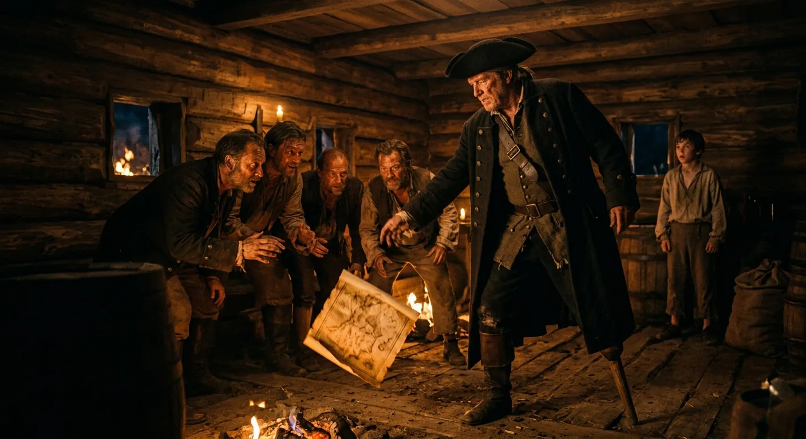
The Pirates' Mutiny Fails
The pirates had been deliberating outside for some time when one returned to the blockhouse, requesting the torch with a salute that struck young Jim Hawkins as faintly mocking. Silver granted the loan readily enough, and the man departed, leaving captor and captive alone in darkness.
"There's a breeze coming, Jim," Silver remarked, his tone having grown strangely friendly and familiar during their confinement together.
Jim peered through the nearest loophole at the scene below. The great fire had burned low, reduced to dull embers that explained why the conspirators required the torch. Halfway down the slope toward the stockade, the mutineers had gathered in a tight cluster—one man holding the light aloft, another kneeling at the center of their circle with an open knife glinting in the mingled glow of moon and flame. The others hunched forward, watching intently. Jim glimpsed a book in the kneeling man's hand alongside the blade, and puzzled over how such an incongruous object had come into their possession. When the figure rose and the whole party advanced toward the house, Jim stepped back from the loophole—it seemed beneath his dignity to be caught spying on them.
"Let 'em come, lad," Silver said cheerfully. "I've still a shot in my locker."
The five men crowded through the doorway, pushing one of their number forward as their reluctant spokesman. The poor fellow's hesitant approach—each foot set down as though testing thin ice, his closed right fist extended before him—would have been comical under different circumstances. Silver urged him on with rough encouragement, and the buccaneer delivered something into the sea-cook's palm before scurrying back to his companions.
Silver examined the object without surprise. "The black spot! I thought so." But his tone sharpened when he recognized the paper. "You've gone and cut this out of a Bible. What fool's cut a Bible?"
The superstitious Morgan groaned that no good would come of it, and Silver pressed the matter until Dick was named as the culprit. "Then Dick can get to prayers," Silver declared grimly. "He's seen his slice of luck, has Dick."
George Merry, the tall man with yellow eyes, demanded Silver read the charges written on the spot. Silver complied with theatrical indifference, discovering the word "Deposed" inscribed there, and mocked George's penmanship before insisting on his right under pirate law to answer the crew's grievances before any vote could stand.
The accusations came swiftly: Silver had bungled the cruise, released their enemies from the stockade for nothing, refused to attack on the march, and kept the boy Jim alive for unknown purposes. Silver answered each charge with devastating force, reminding them that it was Anderson, Hands, and George Merry himself who had forced his hand against his better judgment—and most of that meddling crew now lay dead. He painted vivid pictures of the gibbet awaiting them all, chains jangling as the tide carried ships past their rotting corpses.
As for the boy, Silver argued Jim remained a valuable hostage. The doctor's visits benefited their wounded. And then Silver played his masterstroke—he produced the treasure map itself, casting it upon the floor.
The effect was electric. The mutineers fell upon the chart like cats on a mouse, passing it between them with oaths and childish laughter, as though the paper were gold itself. When George questioned how they would escape without a ship, Silver rounded on him furiously, reminding all present who had lost the schooner and who had found the treasure.
"I resign, by thunder!" Silver announced. "Elect whom you please."
But the crew would have no other captain. "Barbecue forever!" they cried.
Silver tossed the now-worthless black spot to Jim as a curiosity—a piece of Revelation bearing the words "Without are dogs and murderers," its blank side blackened with ash. That night, as the others slept, Jim lay awake contemplating the remarkable game Silver played: holding the mutineers together with one hand while grasping desperately for any means of salvation with the other.
The morning would bring the hunt for Flint's treasure, and with it, answers to questions Jim dared not yet ask.
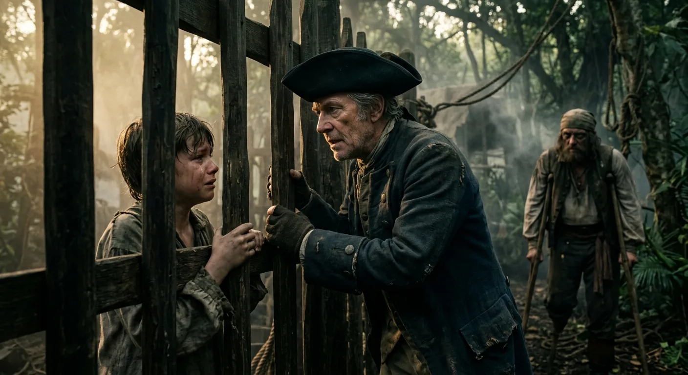
The Doctor's Dangerous Visit
The morning broke with a voice ringing clear from the wood's edge—Dr. Livesey, arriving at first light to tend his unlikely patients. The sound brought both relief and shame flooding through me, for I could not forget my reckless conduct, my sneaking away from duty, and now here I stood among cutthroats and villains, forced to meet the good doctor's eye.
Silver greeted him with all his old charm, cheerful as a landlord welcoming a paying guest, announcing my presence as though I were some delightful surprise rather than a prisoner balanced on the knife's edge of death. When the doctor heard my name, he stopped cold, and several heartbeats passed before he could bring himself forward. Yet when he entered that block house, he gave me but one grim nod and set straight to his work, rattling off medical observations with the calm authority of a physician making country rounds rather than a man surrounded by treacherous devils who might murder him on a whim.
The pirates, somehow cowed by his professional manner, submitted to his examinations like chastened schoolboys. He diagnosed fevers and upturned livers, scolded them roundly for camping in pestilent bog-air, and reminded them—with pleasant poison in his words—that he served as their doctor only to preserve them for King George and the gallows. They swallowed that bitter medicine alongside their prescriptions.
When the doctor requested a private word with me, George Merry erupted in protest, but Silver silenced him with a roar that would shame a lion. The old pirate proposed a compromise: I would give my word of honour not to escape, and he would bring me to the stockade's edge where the doctor and I might speak through the wooden spars. I gave my pledge readily.
The moment the doctor departed, the pirates rounded on Silver, accusing him of treachery, of making separate peace, of precisely what he was indeed doing. Yet Silver was twice the man any of them could hope to be. He flourished the treasure chart, reminded them they could not afford to break their treaty on the very morning of the hunt, and promised he would be the one to betray the doctor when the proper moment arrived. His volubility silenced them, if it did not convince.
Outside the stockade, Silver transformed utterly—the swagger drained away, his cheeks hollow, his voice trembling as he begged the doctor to remember what good he had done, to speak a word of hope for a man steering so near the wind that the gallows shadow fell across him.
The doctor's words to me came hard but fair. He named my departure cowardly, for I had waited until Captain Smollett lay ill before running off. I wept freely and owned my fault, confessing that death held no terror—only torture. At this, the doctor urged me to leap the fence and run, promising to bear all blame. But I had passed my word, and I would not break it, not when Silver had trusted me.
Instead, I gave the doctor what intelligence I could: that I had secured the ship and hidden her in North Inlet. His eyes lit with wonder as I recounted my adventures. He declared there was a kind of fate at work—that at every turn, it was I who had saved our party's lives. He would not let me forfeit mine in return. He warned Silver cryptically to expect squalls when the treasure was found, hinted at secrets he could not reveal, but promised to do his utmost to save the old sea-cook from hanging, short of perjury.
With a firm handshake through the stockade timbers, the doctor bade me farewell and strode briskly into the forest, leaving me to wonder what help he intended to seek—and whether it would arrive before the pirates' patience ran out.
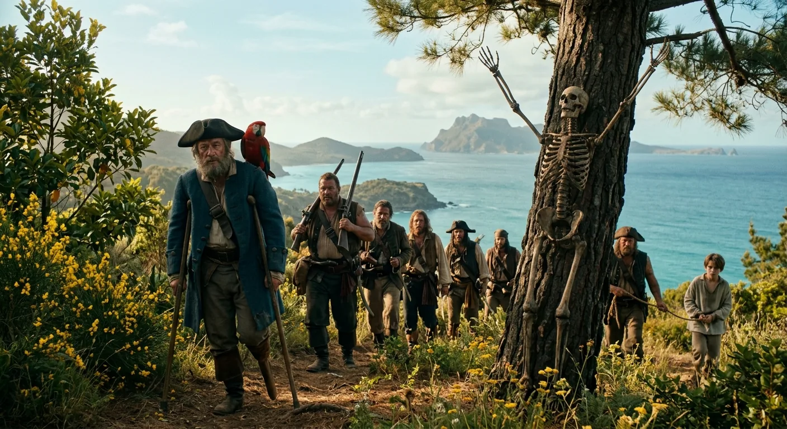
The Uneasy Alliance Seeks Flint's Gold
Silver drew Jim close the moment they found themselves alone, his voice low and urgent as he struck what bargain he could between them. He had marked the doctor's signal for the boy to flee, had watched Jim refuse it, and this small act of loyalty—or perhaps merely of self-preservation—had kindled in the old sea-cook the first ember of hope since the failed assault on the stockade. Whatever sealed orders the doctor had left them, whatever mysteries hung over the treasure map now in pirate hands, Silver made plain that their fates were bound together. They would stand back to back, he declared, and save their necks in spite of all that fortune might hurl against them.
A shout from the fire broke the moment. Breakfast awaited—biscuit and fried junk cooked over a blaze large enough to roast an ox. The pirates had prepared three times what any company might consume, and when they had eaten their fill, one fellow tossed the remainder into the flames with a careless laugh, sending sparks roaring into the morning air. Jim watched this profligate waste with growing unease. Sleeping sentries, squandered provisions—these were men fit for a single desperate brush but utterly unsuited to any prolonged campaign. Even Silver offered no rebuke, though his cunning had never seemed sharper. He spoke instead of strategy, reminding his mates that though the honest party held the ship, those who possessed the boats would command the upper hand once the treasure was found. As for the hostage, Silver added with a sidelong glance at Jim, the boy would be kept close—led on a line like so much gold against accidents—until such time as ship and treasure both were secured. Then, he promised, they would talk young Hawkins over and give him his share for all his kindness.
Jim's heart sank. The scheme was feasible, and Silver, already twice a traitor, would not hesitate to seize it. Yet even should circumstances force the cook to honour his bargain with the doctor, what then? The moment his followers' suspicions ripened into certainty, Jim and the crippled pirate would face five strong seamen alone. And still the mystery of the doctor's parting words gnawed at him: *Look out for squalls when you find it.*
The treasure party made a curious spectacle as they set forth—soiled sailor clothes, weapons bristling at every hip, Silver festooned with two muskets, a cutlass, and twin pistols, the parrot Captain Flint gabbling nonsense upon his shoulder. Jim followed at the end of a rope like a dancing bear. They rowed across the anchorage, debating the chart's cryptic directions—*Tall tree, Spy-glass shoulder, bearing a point to the N. of N.N.E.*—and landed at the mouth of the second river. The climb toward the plateau proved arduous at first, the ground heavy and mired, but soon the landscape opened into fragrant slopes dotted with nutmeg and flowering broom, the air fresh beneath the sheer sunbeams.
It was there, near the plateau's brow, that a cry of terror rang out. The men converged upon the sound and found not treasure but a human skeleton sprawled beneath a great pine, its bones arranged in an unnatural line—feet pointing one way, hands stretched overhead like a diver's. Silver took a compass bearing and confirmed the grim truth: the corpse pointed directly toward Skeleton Island, E.S.E. and by E. Flint himself had laid this man here as a ghastly signpost to the hoard, one of the six who had helped bury the gold and paid for the knowledge with their lives.
A pall settled over the pirates. They spoke now in hushed tones of Flint's terrible death, of his raging and singing *Fifteen Men* even as the death-haul gripped him. Silver silenced them at last and urged them forward, yet none ran ahead as before. They kept close together, voices bated, the terror of the dead buccaneer heavy upon their spirits—while somewhere ahead, the treasure and whatever squalls the doctor had foreseen still awaited.
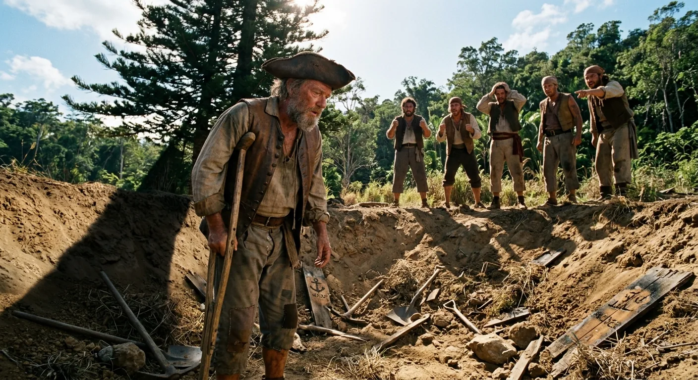
Flint's Ghost Haunts the Hunt
The party halted upon the brow of the plateau, partly to steady their rattled nerves after the grim discovery of the skeleton, and partly to give rest to Silver and the ailing men. From this elevated perch, the world spread out before them in all directions—westward, the Cape of the Woods lay fringed with breaking surf; behind them, the anchorage and Skeleton Island fell away, with the open eastern sea glittering beyond the lowlands. The Spy-glass reared above them, spotted with lonely pines and scarred with black precipices. Save for the distant thunder of breakers and the chirping of insects, a profound silence held the island—not a man, not a sail broke the immense solitude.
Silver took his bearings with the compass and pronounced the search child's play now, with three tall trees standing in proper line from Skeleton Island. But the pirates had little stomach for celebration. Talk of Flint—his blue face, his terrible end, the rum that had killed him—crept among them in lowering whispers until their voices scarcely disturbed the stillness of the wood.
Then, out of the trees ahead, a thin and trembling voice struck up that infamous refrain: *"Fifteen men on the dead man's chest—Yo-ho-ho, and a bottle of rum!"*
Terror seized the buccaneers like nothing Jim had ever witnessed. The colour drained from their faces as though by enchantment; Morgan fell grovelling to the ground. "It's Flint!" cried Merry, and the song broke off as suddenly as it had begun, as if an unseen hand had clapped over the singer's mouth.
Silver, his lips ashen, fought to master himself. "This won't do," he managed. "Someone's skylarking—someone flesh and blood." His courage returned as he spoke, and the others began to rally—until the voice came again, wailing across the clefts of the Spy-glass: *"Darby M'Graw! Fetch aft the rum, Darby!"*
The pirates stood rooted, eyes starting from their heads. Morgan moaned that these were Flint's very last words above board. Dick fumbled out his Bible and fell to praying. Yet Silver remained unconquered. Though his teeth rattled, he made his stand: "I'm here to get that stuff, and I'll not be beat by man or devil. Seven hundred thousand pound lies not a quarter mile from here!"
His men cowered at such irreverence until Silver struck upon a cunning argument: spirits cast no shadows, so what business had one with an echo? The logic was thin, yet it worked upon their superstitious minds—and then George Merry hit upon the truth. "By the powers, Ben Gunn!" roared Silver, and the spell was broken. Ben Gunn, marooned and mad, whom nobody minded dead or alive.
Their spirits revived, the treasure-hunters pressed forward across the open plateau, threading among great pines and sun-baked clearings of nutmeg and azalea. The first tall tree proved wrong, and the second. The third rose two hundred feet into the air, a vegetable giant with a trunk wide as a cottage, its shadow enough to shelter a company. But it was not the tree's size that gripped the pirates now—it was the knowledge that Flint's fortune lay buried beneath it.
Greed swallowed their terror whole. Their eyes burned, their feet grew swift, their souls fixed upon that lifetime of extravagance waiting in the earth. Silver hobbled furiously, cursing at the flies, yanking savagely at the rope that bound Jim to him and fixing him with murderous glances. Jim read his intentions plain: once the gold was found, every honest throat on the island would be cut.
They reached the margin of the thicket. "Huzza, mates, all together!" shouted Merry, and the foremost broke into a run—then stopped dead. A low cry arose. Silver doubled his pace and halted beside them.
Before them yawned a great excavation, its sides long since fallen in, grass sprouting at the bottom. Among the debris lay a broken pick and scattered boards branded with a familiar name: *Walrus*—Flint's ship.
The cache had been found and rifled. The seven hundred thousand pounds were gone.
As the pirates stood gaping at that empty pit, the next desperate moments would test whether any of them—or Jim—would leave this plateau alive.
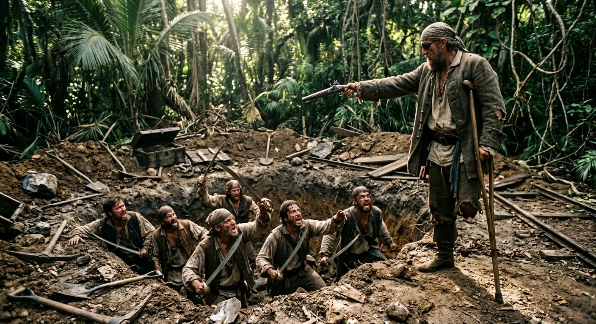
Ben Gunn's Secret Revealed
Never before had fortune reversed itself so completely, so cruelly. Six men stood at the edge of that ransacked pit, each one struck dumb as though by a physical blow. The treasure—Flint's legendary hoard of seven hundred thousand pounds—was gone, the cache reduced to nothing more than scattered boards and a single two-guinea piece that Morgan plucked from the dirt with a torrent of oaths.
Yet Silver, that remarkable villain, recovered almost before the others had drawn breath to curse. His mind had been fixed upon that money like a racer straining toward the finish, and though he was brought up dead in a single heartbeat, he found his footing with terrifying swiftness. Without a word of explanation, he pressed a double-barrelled pistol into young Hawkins's hands and whispered for him to stand ready. Then, quiet as a shadow, he maneuvered northward until the hollow of the empty pit lay between the two of them and the five furious buccaneers.
Jim could hardly stomach it—this constant turning of coats, this endless calculation. "So you've changed sides again," he whispered, revolted by the man's duplicity even as he accepted the weapon.
There was no time for Silver to answer. Merry, that pushing, ambitious wretch, had worked himself into a righteous fury. He waved the pitiful two-guinea piece like an accusation, screaming that Silver had known all along, that he had bungled them down to ruin. The others scrambled from the excavation, positioning themselves opposite Silver and Jim, murder plain in their eyes. For a long, breathless moment the two parties faced each other across the pit—five against two—and nobody screwed up courage enough to strike the first blow.
Silver never flinched. Upright on his crutch, cool as the sea at dawn, he waited. Whatever else might be said of the man, he was brave, and no mistake.
Then Merry raised his arm to lead the charge—and three musket shots cracked from the thicket. Merry tumbled headfirst into the excavation. The man with the bandage spun like a child's toy and collapsed, dead but still twitching. The remaining three turned and fled with all their might.
Before Jim could blink, Long John had fired both barrels into the struggling Merry. As the man rolled up his eyes in his final agony, Silver looked down at him with terrible calm. "George," said he, "I reckon I settled you."
From the nutmeg trees emerged Dr. Livesey, Gray, and the wild maroon Ben Gunn, muskets still smoking. The doctor urged them forward at a double-quick pace to cut off the survivors from the boats, and they plunged through the brush at speed—though none worked harder than Silver, leaping on his crutch until his chest threatened to burst.
When they reached the slope and saw the three mutineers still running toward Mizzenmast Hill, well away from escape, they sat to catch their breath. Silver came up slowly, mopping his face, and offered his thanks with characteristic smoothness. And there stood Ben Gunn, wriggling with embarrassment—the half-idiot maroon who had undone them all.
For it was Ben who had found the skeleton, rifled the treasure, and carried it on his back through weary journeys to a cave on the two-pointed hill. The doctor had wormed this secret from him and struck a bargain with Silver—the now-useless chart, the stores, anything to move safely from the stockade and guard the money. Jim had been left to face the mutineers' disappointment, a choice that went against the doctor's heart but served those who had stood by their duty.
They destroyed one gig and sailed the other round to North Inlet, recovering the drifting *Hispaniola* along the way. At Ben Gunn's cave, amid heaps of coin and bars of gold, they supped like kings while Captain Smollett rested by the fire. And there sat Silver at the edge of the firelight, eating heartily, laughing quietly—the same bland, obsequious seaman as ever, waiting to see which way the wind would blow next.
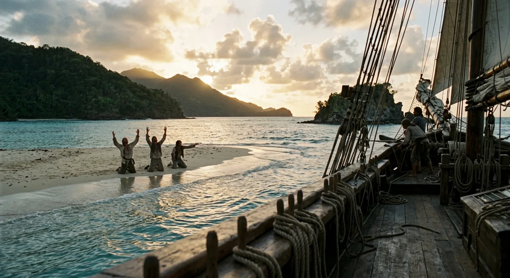
Gold, Farewell, and Marooned Mutineers
The morning following our discovery found us bent to the considerable labor of moving that vast fortune—a full mile overland to the beach, then three miles more by boat to the *Hispaniola*. Though we were but a small company of workmen, the three mutineers still skulking about the island troubled us little; a single watchman posted on the hillside proved sufficient guard against surprise, for we reckoned those villains had quite lost their appetite for fighting.
So the work went briskly forward. Gray and Ben Gunn plied the boat whilst the rest of us heaped treasure upon the sand. Two gold bars slung together made burden enough for any man, and he was glad to carry them slowly. As for myself, being of little use at such heavy lifting, I spent my days in the cave, packing coined money into bread-bags—and never did I take greater pleasure in any task. What a strange collection it was, far surpassing even Billy Bones's hoard in its wonderful variety: English and French and Spanish pieces, Georges and Louises, doubloons and double guineas and moidores and sequins, bearing the faces of a hundred years' worth of European kings. There were curious Oriental coins stamped with markings like wisps of string or spider's web, round pieces and square, and some bored through the middle as if meant to be worn about the neck. Nearly every variety of money in the world must have found its place in that treasure, and for sheer number they were thick as autumn leaves, until my back ached from stooping and my fingers grew sore from the sorting.
Day after day the work continued. Each evening saw a fortune stowed aboard, yet another fortune awaited the morrow—and through all this time we heard nothing of the surviving mutineers. Until the third night, when the doctor and I stood upon the hill overlooking the lowlands, and from the thick darkness below came a sound carried on the wind, somewhere between shrieking and singing.
"Heaven forgive them," said the doctor. "'Tis the mutineers."
"All drunk, sir," came Silver's voice from behind us—for that remarkable man had been allowed his liberty, and despite daily rebuffs, continued his unwearying efforts to ingratiate himself with all hands. None treated him better than a dog, save perhaps Ben Gunn, who remained terrified of his old quartermaster, and myself, who owed him something, though I had also witnessed his readiness for fresh treachery. The doctor spoke of his duty to aid even enemies who might be fevered, but Silver counseled against it, warning that those men could neither keep their word nor believe others capable of doing so.
That was nearly the last we heard of them. A council determined we must abandon them on the island—much to Ben Gunn's delight—though we left behind powder, provisions, medicines, and tobacco. Then, one fine morning, we weighed anchor and stood out of North Inlet. As we passed through the narrows, we spied all three mutineers kneeling on a spit of sand, arms raised in desperate supplication. It went to all our hearts to leave them so, but we could not risk another mutiny. One of them, seeing we would not turn back, fired a shot that whistled over Silver's head and through the mainsail. After that, we kept below the bulwarks, and soon the island itself sank into the blue round of sea.
Short-handed as we were, we made for Spanish America to take on fresh crew, and there, in a beautiful land-locked gulf, Silver made his escape—aided by Ben Gunn, who feared for our lives should that one-legged man remain aboard. The sea-cook had not gone empty-handed; he'd helped himself to a sack of coin worth some four hundred guineas. We were all rather pleased to be quit of him so cheaply.
The *Hispaniola* reached Bristol in due course. Of those who had sailed, only five returned. Captain Smollett retired from the sea; Gray saved his money, studied his profession, and rose to become mate and part owner of his own ship. Ben Gunn spent his thousand pounds in nineteen days and was back begging on the twentieth, though he lives now as a lodge-keeper and notable church singer. Of Silver, we heard no more—that formidable man has gone clean out of my life, though perhaps he found his way back to his old Negress and lives in comfort still.
The bar silver and the arms remain where Flint buried them, for oxen and wain-ropes would not drag me back to that accursed island. My worst dreams yet are of surf booming on its coasts and Captain Flint's voice shrieking in my ears: *Pieces of eight! Pieces of eight!*
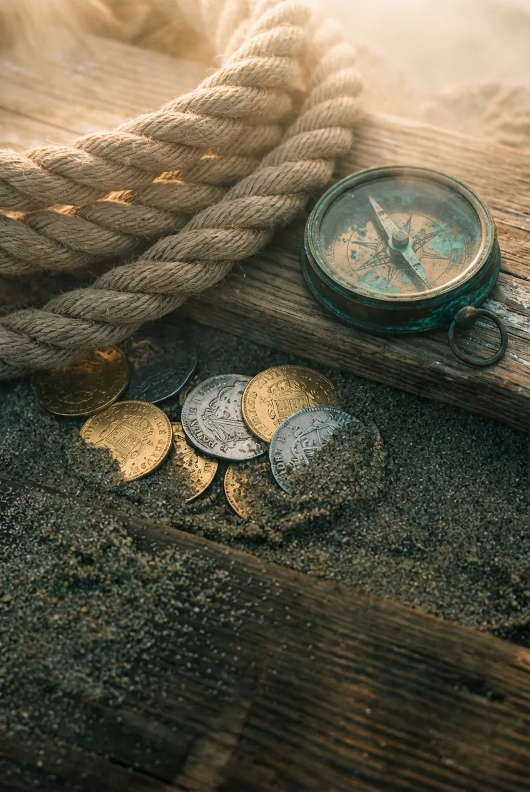